Portrait credits
Every player portrait on this site is an illustration adapted from photographs published under Creative Commons licences, chiefly on Wikimedia Commons. The photographers are credited below, with the photographs each portrait was drawn from and their licences. The illustrations were made with an image model from those photographs; they are not photographs, and any resemblance is the photographers' work.
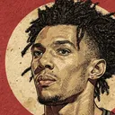
Adapted from photographs by GamecockCentral, Gamecock Central.
- A.J. Lawson and Terence Davis.jpg · CC BY 2.0
- A.J. Lawson free throw (cropped).jpg · CC BY 2.0
- A.J. Lawson vs. Texas A&M.jpg · CC BY 2.0

.jpg){kind=link}

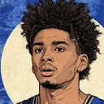
Adapted from photographs by Chensiyuan.
- 1 aj johnson 2025 (cropped).jpg · CC BY-SA 4.0
.jpg){kind=link}
This illustration is licensed CC BY-SA 4.0, as its share-alike sources require.
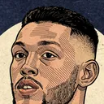
Adapted from photographs by Mogami Kariya, Reggie Hildred.
- Aaron Gordon (50638322598).jpg · CC BY-SA 2.0
- Aaron Gordon Davis Bertans 2019 (cropped).jpg · CC BY-SA 4.0
.jpg){kind=link}
.jpg){kind=link}
This illustration is licensed CC BY-SA 4.0, as its share-alike sources require.
Adapted from photographs by All-Pro Reels from District of Columbia.
.jpg){kind=link}
This illustration is licensed CC BY-SA 4.0, as its share-alike sources require.
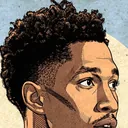
Adapted from photographs by SneakinDeacon.
- Aaron Wiggins vs. Michigan (cropped).jpg · CC BY-SA 2.0
.jpg){kind=link}
This illustration is licensed CC BY-SA 4.0, as its share-alike sources require.
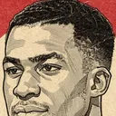
Adapted from photographs by Bigmatbasket.
- Présentation équipe BCM, 10 septembre 2016 - 02.jpg · CC BY-SA 4.0
- Présentation équipe BCM, 10 septembre 2016 - 28.jpg · CC BY-SA 4.0
- Présentation équipe BCM, 10 septembre 2016 - 08.jpg · CC BY-SA 4.0


This illustration is licensed CC BY-SA 4.0, as its share-alike sources require.
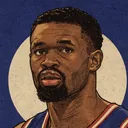
Adapted from photographs by Zafer.
- Adem Bona 30 Türkiye 20250823 (24).jpg · CC BY 4.0
- Adem Bona 30 Türkiye 20250823 (18).jpg · CC BY 4.0
- Adem Bona 30 Türkiye 20250823 (23).jpg · CC BY 4.0
- Adem Bona 30 Türkiye 20250823 (4).jpg · CC BY 4.0
- Adem Bona 30 Türkiye 20250823 (1).jpg · CC BY 4.0
.jpg){kind=link}
.jpg){kind=link}
.jpg){kind=link}
.jpg){kind=link}
.jpg){kind=link}
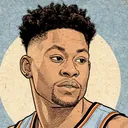
Adapted from photographs by All-Pro Reels from District of Columbia, Tom Hagerty.
- 2019 Admiral Schofield (48824170506) (cropped).jpg · CC BY-SA 2.0
- Admiral Schofield Gary Clark.jpg · CC BY 2.0
- 2019 Rui Hachimura Admiral Schofield Justin Robinson (48824326287).jpg · CC BY-SA 2.0
_(cropped).jpg){kind=link}

.jpg){kind=link}
This illustration is licensed CC BY-SA 4.0, as its share-alike sources require.
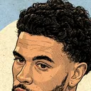
Adapted from photographs by Daiei Onoguchi.
.jpg){kind=link}
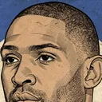
Adapted from photographs by All-Pro Reels, Keith Allison from Hanover, Sgt Robert M England (2nd BCT, DVIDSHUB.
- Al Horford 2019.jpg · CC BY-SA 2.0
- Al Horford - 49176949857.jpg · CC BY-SA 2.0
- Al Horford, Marcin Gortat (33618007954).jpg · CC BY-SA 2.0
- Al Horford headset Stryker Hawaii.jpg · Public domain
- Kobe Bryant USA vs Dominican Republic exhibition game Image.jpg · Public domain


.jpg){kind=link}


This illustration is licensed CC BY-SA 4.0, as its share-alike sources require.
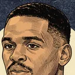
Adapted from photographs by Keith Allison from Owings Mills, Keith Allison.
- Al Thornton Wizards 2.jpg · CC BY-SA 2.0
- Al Thornton Wizards vs Heat.jpg · CC BY-SA 2.0
- Washington Wizards players gather on 2010-12-18.jpg · CC BY-SA 2.0


This illustration is licensed CC BY-SA 4.0, as its share-alike sources require.
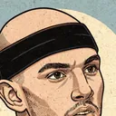
Adapted from photographs by All-Pro Reels.
- Alex Caruso (52480104636) (cropped).jpg · CC BY-SA 2.0
_(cropped).jpg){kind=link}
This illustration is licensed CC BY-SA 4.0, as its share-alike sources require.
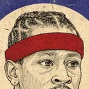
Adapted from photographs by Keith Allison from Baltimore, Keith Allison, reeb0k2008.
- Allen Iverson.jpg · CC BY-SA 2.0
- Iverson dribbling.jpg · CC BY-SA 2.0
- Allen Iverson v DeShawn Stevenson.jpg · CC BY-SA 2.0
- Iverson cards 3.jpg · CC BY 2.0
- Allen Iverson headshot.jpg · CC BY-SA 2.0


This illustration is licensed CC BY-SA 4.0, as its share-alike sources require.
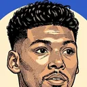
Adapted from photographs by Tdorante10, TonyTheTiger.
- Brooklyn Nets vs NY Knicks 2018-10-03 td 172 - 1st Quarter.jpg · CC BY-SA 4.0
- 20150329 MCDAAG closed practice Allonzo Trier (1).JPG · CC BY-SA 4.0
- 20150329 MCDAAG closed practice Allonzo Trier (2).JPG · CC BY-SA 4.0

.JPG){kind=link}
.JPG){kind=link}
This illustration is licensed CC BY-SA 4.0, as its share-alike sources require.
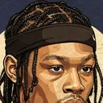
Adapted from photographs by SneakinDeacon.
- Alondes Williams (cropped).jpg · CC BY-SA 2.0
.jpg){kind=link}
This illustration is licensed CC BY-SA 4.0, as its share-alike sources require.
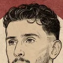
Adapted from photographs by Zafer.
- Alperen Şengün 23 Türkiye 20250823 (8).jpg · CC BY 4.0
- Alperen Şengün 23 Türkiye 20250823 (2) (cropped).jpg · CC BY 4.0
- Alperen Şengün 23 Türkiye 20250823 (17).jpg · CC BY 4.0
- Alperen Şengün 23 Türkiye 20250822 (1).jpg · CC BY 4.0
- Alperen Şengün 23 Türkiye 20250823 (21).jpg · CC BY 4.0
.jpg){kind=link}
_(cropped).jpg){kind=link}
.jpg){kind=link}
.jpg){kind=link}
.jpg){kind=link}
Adapted from photographs by Keith Allison, 又黑蜗壳, scott mecum.
- Amar'e Stoudemire Knicks 2013.jpg · CC BY-SA 2.0
- 效力于福建中华鲟的阿马雷 斯塔德迈尔.jpg · CC BY-SA 4.0
- Amar'e Stoudemire March 2012.jpg · CC BY 2.0
- Amar'e Stoudemire Nene.jpg · CC BY-SA 2.0
- Raymond Felton John Wall.jpg · CC BY-SA 2.0


This illustration is licensed CC BY-SA 4.0, as its share-alike sources require.
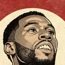
Adapted from photographs by Pikraken.
- Jalen Duren fights for rebound 1232026.jpg · CC BY 4.0

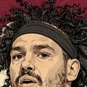
Adapted from photographs by Erik Drost.
- Anderson Varejão 2021.jpg · CC BY 2.0
- Anderson Varejao (51176469938).jpg · CC BY 2.0
- Anderson Varejao (51175606152).jpg · CC BY 2.0

.jpg){kind=link}
.jpg){kind=link}
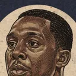
Adapted from photographs by Keith Allison, Keith Allison from Owings Mills, Leo Hidalgo from España.
- Andray Blatche Deron Williams.jpg · CC BY-SA 2.0
- Carlos Boozer and Andray Blatche.jpg · CC BY-SA 2.0
- Andray Blatche November 2010.jpg · CC BY-SA 2.0
- Andray Blatche World Cup 2014 (2).jpg · CC BY 2.0
- Andray Blatche November 2010 in shooting shirt.jpg · CC BY-SA 2.0


.jpg){kind=link}

This illustration is licensed CC BY-SA 4.0, as its share-alike sources require.
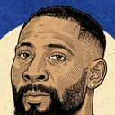
Adapted from photographs by Chensiyuan.
- 1 andre drummond 2026.jpg · CC BY-SA 4.0

This illustration is licensed CC BY-SA 4.0, as its share-alike sources require.
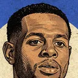
Adapted from photographs by All-Pro Reels, Keith Allison from Hanover, Airman 1st Class Daniel Hughes/99th Air Base Wing, Gilbert_Arenas_and_Andre_Iguodala_2.jpg: Keith Allison from Owings Mills, Keith Allison.
- Heat Andre Iguodala (cropped).jpg · CC BY-SA 2.0
- Andre Iguodala 2016 (cropped).jpg · CC BY-SA 2.0
- Andre Iguodala accepts the player of the game award from U.S. Air Force Maj. Gen. Bill Hyatt and Chief Master Sgt. Robert Ellis.jpg · Public domain
- Andre Iguodala.jpg · CC BY-SA 2.0
- Elton Brand, Gilbert Arenas and Andre Iguodala.jpg · CC BY-SA 2.0
.jpg){kind=link}
.jpg){kind=link}


This illustration is licensed CC BY-SA 4.0, as its share-alike sources require.
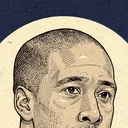
Adapted from photographs by File:Andre Miller with teammates.jpg: Keith Allison derivative work: Chrishmt0423, Keith Allison, Game Face.
- Andre Miller Wizards.jpg · CC BY-SA 3.0
- Andre Miller.jpg · CC BY-SA 2.0
- Andre Miller Bradley Beal.jpg · CC BY-SA 2.0
- Andre Miller Drew-Goodman game.jpg · CC BY-SA 2.0


This illustration is licensed CC BY-SA 4.0, as its share-alike sources require.
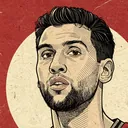
Adapted from photographs by Keith Allison, Matthew Addie.
- Martell Webster Andrea Bargnani 2.jpg · CC BY-SA 2.0
- Martell Webster Andrea Bargnani.jpg · CC BY-SA 2.0
- David Lee Andrea Bargnani.jpg · CC BY 2.0


This illustration is licensed CC BY-SA 4.0, as its share-alike sources require.
Adapted from photographs by Christopher Johnson.
- Russia national basketball team.jpg · CC BY-SA 2.0

This illustration is licensed CC BY-SA 4.0, as its share-alike sources require.
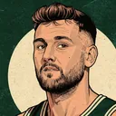
Adapted from photographs by Frenchieinportland, Matthew Addie, Ash Carter, Andrew_Bogut_and_David_Lee.jpg: Matthew Addie derivative work: Arbor to SJ, Keith Allison from Owings Mills.
- Andrew Bogut (cropped).jpg · CC BY-SA 4.0
- DeMarcus Cousins Andrew Bogut.jpg · CC BY 2.0
- Bogut and Thompson tip off.jpg · CC BY 2.0
- Andrew Bogut 2013-03-06.jpg · CC BY 2.0
- JaVale McGee and Andrew Bogut.jpg · CC BY-SA 2.0
.jpg){kind=link}


This illustration is licensed CC BY-SA 4.0, as its share-alike sources require.
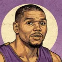
Adapted from photographs by Erik Drost from United States, Keith Allison, Matthew Delaney.
- Andrew Bynum (10355650895).jpg · CC BY 2.0
- Andrew Bynum Mar-2012.jpg · CC BY-SA 2.0
- Andrew Bynum signing autographs at Lakers Fan Jam.jpg · CC BY-SA 2.0
- Andrew Bynum (10355849483).jpg · CC BY 2.0
.jpg){kind=link}


.jpg){kind=link}
This illustration is licensed CC BY-SA 4.0, as its share-alike sources require.
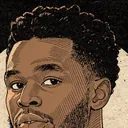
Adapted from photographs by Erik Drost.
- Andrew Wiggins 2022.jpg · CC BY 2.0
- Andrew Wiggins (51914779231).jpg · CC BY 2.0
- Andrew Wiggins and Jason Tatum (51913768487).jpg · CC BY 2.0
- Andrew Wiggins, Jason Tatum, and Khris Middleton (51915348525).jpg · CC BY 2.0
- Andrew Wiggins and Joel Embiid (51916236758).jpg · CC BY 2.0

.jpg){kind=link}
.jpg){kind=link}
.jpg){kind=link}
.jpg){kind=link}
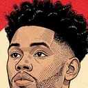
Adapted from photographs by Frenchieinportland.
- AnferneeSimons (cropped).jpg · CC BY-SA 4.0
- Anfernee Simons (cropped).jpg · CC BY-SA 4.0
.jpg){kind=link}
.jpg){kind=link}
This illustration is licensed CC BY-SA 4.0, as its share-alike sources require.
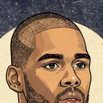
Adapted from photographs by Holly Cheng, Keith Allison.
- Lakers vs Nuggets 2013-01-06 (11).JPG · CC BY-SA 3.0
- Antawn Jamison Wizards.jpg · CC BY-SA 2.0
.JPG){kind=link}

This illustration is licensed CC BY-SA 4.0, as its share-alike sources require.
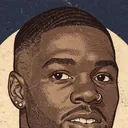
Adapted from photographs by Jeremy Rincon, All-Pro Reels from District of Columbia.
- Anthony Bennett by Jeremy Rincon.jpg · CC BY 2.0
- Anthony Bennett reaches the floor (9154375361).jpg · CC BY-SA 2.0
- Anthony Bennett with no attention (9156599508).jpg · CC BY-SA 2.0

.jpg){kind=link}
.jpg){kind=link}
This illustration is licensed CC BY-SA 4.0, as its share-alike sources require.
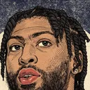
Adapted from photographs by Erik Drost.
- Anthony Davis - 51959902134 (cropped).jpg · CC BY-SA 2.0
- Anthony Davis pre-game (cropped).jpg · CC BY 2.0
- AD lakers.jpg · CC BY 2.0
- Anthony Davis pre-game.jpg · CC BY 2.0
- Max Strus.jpg · CC BY 2.0
.jpg){kind=link}
.jpg){kind=link}


This illustration is licensed CC BY-SA 4.0, as its share-alike sources require.
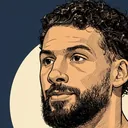
Adapted from photographs by All-Pro Reels, Hameltion.
- 2025 Washington Wizards Media Day 52.jpg · CC BY-SA 4.0
- Celtics at Wizards 2024-12-036.jpg · CC BY-SA 4.0
- Anthony Gill (51875108419) (cropped).jpg · CC BY-SA 2.0
- Anthony Gill and James Johnson (51875108419).jpg · CC BY-SA 2.0


_(cropped).jpg){kind=link}
.jpg){kind=link}
This illustration is licensed CC BY-SA 4.0, as its share-alike sources require.
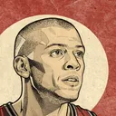
Adapted from photographs by Keith Allison from Baltimore, shaka.
- Anthony Parker Cavs2.jpg · CC BY-SA 2.0
- Anthony Parker Cavs1.jpg · CC BY-SA 2.0
- Anthony Parker.JPG · CC BY-SA 2.0 it


This illustration is licensed CC BY-SA 4.0, as its share-alike sources require.
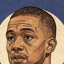
Adapted from photographs by Keith Allison from Owings Mills, Chamber of Fear.
- Anthony Randolph 2 (cropped).jpg · CC BY-SA 2.0
- Anthony Randolph.jpg · CC BY-SA 2.0
- Anthony Randolph 3 (cropped).jpg · CC BY-SA 2.0
- Anthony Randolph Knicks 2010.jpg · CC BY-SA 2.0
.jpg){kind=link}

.jpg){kind=link}

This illustration is licensed CC BY-SA 4.0, as its share-alike sources require.
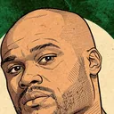
Adapted from photographs by photo taken by flickr user photoren.
- Heat party.jpg · CC BY 2.0

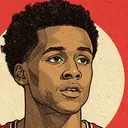
Adapted from photographs by TonyTheTiger.
- 20150329 MCDAAG closed practice Antonio Blakeney (2).JPG · CC BY-SA 4.0
- 20150329 MCDAAG closed practice Antonio Blakeney (4).JPG · CC BY-SA 4.0
- 20150329 MCDAAG closed practice Antonio Blakeney (3).JPG · CC BY-SA 4.0
.JPG){kind=link}
.JPG){kind=link}
.JPG){kind=link}
This illustration is licensed CC BY-SA 4.0, as its share-alike sources require.
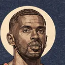
Adapted from photographs by Keith Allison.
- Mcdyess free throw.jpg · CC BY-SA 2.0

This illustration is licensed CC BY-SA 4.0, as its share-alike sources require.
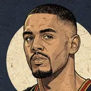
Adapted from photographs by Mike, Michael Tipton, Keith Allison from Owings Mills.
- Arron Afflalo Washington at Orlando 029.jpg · CC BY-SA 2.0
- Arron Afflalo and Nikola Vucevic standing, Wizards vs Magic on December 19, 2012.jpg · CC BY-SA 2.0
- Arron Afflalo Nuggets.jpg · CC BY-SA 2.0


This illustration is licensed CC BY-SA 4.0, as its share-alike sources require.

Adapted from photographs by Pikraken.
- Ausar Thompson free throw 1252026 (cropped).jpg · CC BY 4.0
.jpg){kind=link}
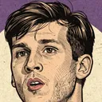
Adapted from photographs by Erik Drost.
- Austin Reeves.jpg · CC BY 2.0
- Austin Reaves (cropped).jpg · CC BY 2.0
- Austin Reaves (51959765431) (cropped).jpg · CC BY 2.0

.jpg){kind=link}
_(cropped).jpg){kind=link}
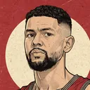
Adapted from photographs by All-Pro Reels from District of Columbia.
- Austin Rivers (47812145211).jpg · CC BY-SA 2.0
- Austin Rivers(2) (50595922032).jpg · CC BY-SA 2.0
- Austin Rivers bicep (50595058493).jpg · CC BY-SA 2.0
- Austin Rivers (50595799241).jpg · CC BY-SA 2.0
- Austin Rivers John Wall Bradley Beal (47760104522).jpg · CC BY-SA 2.0
.jpg){kind=link}
_(50595922032).jpg){kind=link}
.jpg){kind=link}
.jpg){kind=link}
.jpg){kind=link}
This illustration is licensed CC BY-SA 4.0, as its share-alike sources require.
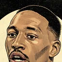
Adapted from photographs by File:Bam Adebayo.jpg: Joe Glorioso derivative work: Shakeydeal33.
- Bam Adebayo (cropped).jpg · CC BY-SA 2.0
.jpg){kind=link}
This illustration is licensed CC BY-SA 4.0, as its share-alike sources require.
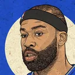

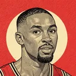
Adapted from photographs by Keith Allison, File:Ben Gordon Bobcats.jpg: Keith Allison derivative work: Chrishmt0423.
- John Wall Ben Gordon.jpg · CC BY-SA 2.0
- Ben Gordon Bobcats cropped.jpg · CC BY-SA 3.0
- Ben Gordon and Chris Wilcox.jpg · CC BY-SA 2.0


This illustration is licensed CC BY-SA 4.0, as its share-alike sources require.
Adapted from photographs by Zafer, Sandro Halank.
- Ben Saraf 77 Ratiopharm Ulm EuroCup 20250128 (3).jpg · CC BY 4.0
- Ben Saraf 77 Ratiopharm Ulm EuroCup 20250122 (1).jpg · CC BY 4.0
- 2025-05-21 ALBA Berlin gegen ratiopharm Ulm (Basketball-Bundesliga 2024-25) by Sandro Halank–007.jpg · CC BY-SA 4.0
- Ben Saraf 77 Ratiopharm Ulm EuroCup 20250128 (4).jpg · CC BY 4.0
- Ben Saraf 77 Ratiopharm Ulm EuroCup 20241014 (2).jpg · CC BY 4.0
.jpg){kind=link}
.jpg){kind=link}
_by_Sandro_Halank%E2%80%93007.jpg){kind=link}
.jpg){kind=link}
.jpg){kind=link}
This illustration is licensed CC BY-SA 4.0, as its share-alike sources require.
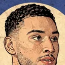
Adapted from photographs by All-Pro Reels.
- Ben Simmons - 49176307818.jpg · CC BY-SA 2.0
- Ben Simmons - 49177017932.jpg · CC BY-SA 2.0
- Ben Simmons - 49176257763 (cropped).jpg · CC BY-SA 2.0


.jpg){kind=link}
This illustration is licensed CC BY-SA 4.0, as its share-alike sources require.
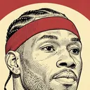
Adapted from photographs by Jauerback, Keith Allison.
- BenWallaceCloseup (cropped).jpg · CC BY-SA 4.0
- BenWallaceCavs.jpg · CC BY-SA 2.0
.jpg){kind=link}

This illustration is licensed CC BY-SA 4.0, as its share-alike sources require.
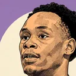
Adapted from photographs by Kenneth C. Zirkel.
- Bez Mbeng, Yale Bulldogs.jpg · CC BY-SA 4.0
- Bez Mbeng, Yale basketball player.jpg · CC BY-SA 4.0


This illustration is licensed CC BY-SA 4.0, as its share-alike sources require.
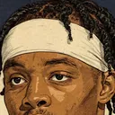
Adapted from photographs by All-Pro Reels.
- 2025 Washington Wizards Media Day 69.jpg · CC BY-SA 4.0
- 2025 Washington Wizards Media Day 56.jpg · CC BY-SA 4.0
- 2025 Washington Wizards Media Day 72.jpg · CC BY-SA 4.0
- 2025 Washington Wizards Media Day 49.jpg · CC BY-SA 4.0
- 2025 Bilal Coulibaly (cropped).jpg · CC BY-SA 4.0


.jpg){kind=link}
This illustration is licensed CC BY-SA 4.0, as its share-alike sources require.
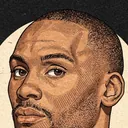
Adapted from photographs by Zafer, MikeKalasnik.
- Bismack Biyombo 20250517 (3).jpg · CC BY 4.0
- Photo on Flickr · CC BY-SA 2.0
- Photo on Flickr · CC BY-SA 2.0
.jpg){kind=link}
This illustration is licensed CC BY-SA 4.0, as its share-alike sources require.
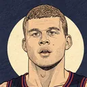
Adapted from photographs by Keith Allison.
- Blake-Griffin.jpg · CC BY-SA 2.0

This illustration is licensed CC BY-SA 4.0, as its share-alike sources require.
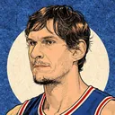
Adapted from photographs by Chensiyuan, Erik Drost.
- 1 boban marjanovic.jpg · CC BY-SA 4.0
- Anderson Varejao and Boban Marjanovic (51176469573).jpg · CC BY 2.0
- Luka Doncic and Boban Marjanovic (cropped).jpg · CC BY 2.0
- Boban Marjanovic (51176491343).jpg · CC BY 2.0
- Boban Marjanovic (51175591297) (cropped).jpg · CC BY 2.0

.jpg){kind=link}
.jpg){kind=link}
.jpg){kind=link}
_(cropped).jpg){kind=link}
This illustration is licensed CC BY-SA 4.0, as its share-alike sources require.
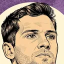
Adapted from photographs by Keith Allison from Hanover, Man Wiki, Ultraslansi.
- Bojan Bogdanovic (cropped).jpg · CC BY-SA 2.0
- Bojan Bogdanovic, Terry Rozier (34362164182).jpg · CC BY-SA 2.0
- Bojan Bogdanovic, Austria v Croatia 2012 (cropped).jpg · CC BY-SA 2.0
- Bojan Bogdanović.JPG · CC BY-SA 3.0
.jpg){kind=link}
.jpg){kind=link}
.jpg){kind=link}

This illustration is licensed CC BY-SA 4.0, as its share-alike sources require.
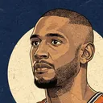
Adapted from photographs by Alliance Internationale.


Adapted from photographs by Keith Allison from Baltimore.
- Brad Miller.jpg · CC BY-SA 2.0

This illustration is licensed CC BY-SA 4.0, as its share-alike sources require.
Adapted from photographs by Sakhalinio.
- Brad Wanamaker 11 Fenerbahçe Men's Basketball 20180107 (3).jpg · CC BY-SA 4.0
- Brad Wanamaker 11 Fenerbahçe Men's Basketball 20180107 (2).jpg · CC BY-SA 4.0
- Brad Wanamaker 11 Fenerbahçe Men's Basketball 20180119.jpg · CC BY-SA 4.0
- Brad Wanamaker 11 Fenerbahçe Men's Basketball 20180105.jpg · CC BY-SA 4.0
- Brad Wanamaker 11 Fenerbahçe Men's Basketball 20171219 (2).jpg · CC BY-SA 4.0
.jpg){kind=link}
.jpg){kind=link}


.jpg){kind=link}
This illustration is licensed CC BY-SA 4.0, as its share-alike sources require.
Adapted from photographs by All Pro Reels, All-Pro Reels.
- Bradley Beal WSH Wizards 2022 (croppedface).jpg · CC BY-SA 2.0
- Bradley Beal (51636059777).jpg · CC BY-SA 2.0
.jpg){kind=link}
.jpg){kind=link}
This illustration is licensed CC BY-SA 4.0, as its share-alike sources require.
Adapted from photographs by Governor Eric Holcomb.
- Branden Carlson cropped.jpg · Public domain
- Branden Carlson versus Indiana State.jpg · Public domain


Adapted from photographs by Erik Drost.
- Brandon Clarke (51814063744) (cropped).jpg · CC BY 2.0
_(cropped).jpg){kind=link}
Adapted from photographs by Keith Allison from Hanover, Keith Allison.
- Dennis Schroder, Brandon Jennings (33483980753).jpg · CC BY-SA 2.0
- Brandon Jennings vs Wizards 2014.jpg · CC BY-SA 2.0
- Jose Calderon, Brandon Jennings (34293586395).jpg · CC BY-SA 2.0
.jpg){kind=link}

.jpg){kind=link}
This illustration is licensed CC BY-SA 4.0, as its share-alike sources require.
Adapted from photographs by Keith Allison.
- Darius Songaila and Brendan Haywood.jpg · CC BY-SA 2.0
- Brendan Haywood.jpg · CC BY-SA 2.0
- Earl Barron and Brendan Haywood.jpg · CC BY-SA 2.0


This illustration is licensed CC BY-SA 4.0, as its share-alike sources require.
Adapted from photographs by Joshua Sukoff.
- Brice Sensabaugh (cropped).jpg · CC BY 2.0
.jpg){kind=link}
Adapted from photographs by User:Zafer, The White House.
- Brook Lopez 20260826 (18).JPG · CC BY-SA 4.0
- President Joe Biden with the Milwaukee Bucks (51845519782).jpg · Public domain
.JPG){kind=link}
.jpg){kind=link}
This illustration is licensed CC BY-SA 4.0, as its share-alike sources require.
Adapted from photographs by Zafer.
- Bruno Fernando 20 Real Madrid Baloncesto Euroleague 20250206 (6).jpg · CC BY 4.0
- Bruno Fernando 20 Real Madrid Baloncesto Euroleague 20250206 (3).jpg · CC BY 4.0
- Bruno Fernando 20 Real Madrid Baloncesto Euroleague 20250206 (4).jpg · CC BY 4.0
- Bruno Fernando 20 Real Madrid Baloncesto Euroleague 20250206 (5).jpg · CC BY 4.0
- Bruno Fernando 20 Real Madrid Baloncesto Euroleague 20250206 (2).jpg · CC BY 4.0
.jpg){kind=link}
.jpg){kind=link}
.jpg){kind=link}
.jpg){kind=link}
.jpg){kind=link}
Adapted from photographs by Alexander Jonesi, MGoBlog.
- Bryce McGowens 2022 (cropped).jpg · CC BY-SA 2.0
- Bryce McGowens.jpg · CC BY-SA 2.0
.jpg){kind=link}

This illustration is licensed CC BY-SA 4.0, as its share-alike sources require.
Adapted from photographs by All-Pro Reels.
- 2025 Washington Wizards Media Day 61.jpg · CC BY-SA 4.0
- 2025 Washington Wizards Media Day 25.jpg · CC BY-SA 4.0
- 2025 Washington Wizards Media Day 20.jpg · CC BY-SA 4.0
- 2025 Washington Wizards Media Day 23.jpg · CC BY-SA 4.0
- 2025 Washington Wizards Media Day 22.jpg · CC BY-SA 4.0


This illustration is licensed CC BY-SA 4.0, as its share-alike sources require.
Adapted from photographs by Erik Drost.
- CJ McCollum (51915243981) (cropped).jpg · CC BY 2.0
- Dylan Windler and CJ McCollum (51658695099).jpg · CC BY 2.0
- CJ McCollum (51657211857).jpg · CC BY 2.0
- CJ McCollum (2022 All-Star Weekend).jpg · CC BY 2.0
- Dylan Windler, CJ McCollum, and Jarrett Allen (51658020936).jpg · CC BY 2.0
_(cropped).jpg){kind=link}
.jpg){kind=link}
.jpg){kind=link}
.jpg){kind=link}
.jpg){kind=link}
Adapted from photographs by Erik Drost.
- Cade Cunningham (51915113234).jpg · CC BY 2.0
- Cade Cunningham (51915407025).jpg · CC BY 2.0
- Cade Cunningham (51915406035).jpg · CC BY 2.0
- Cade Cunningham (51915271393).jpg · CC BY 2.0
- Cade Cunningham (51914153087).jpg · CC BY 2.0
.jpg){kind=link}
.jpg){kind=link}
.jpg){kind=link}
.jpg){kind=link}
.jpg){kind=link}
Adapted from photographs by MGoBlog.
- Caleb Love Eli Brooks.jpg · CC BY-SA 2.0

This illustration is licensed CC BY-SA 4.0, as its share-alike sources require.
Adapted from photographs by Gatorfan252525.
- Caleb Martin at 2023 Miami Heat Family Festival.jpg · CC BY-SA 4.0

This illustration is licensed CC BY-SA 4.0, as its share-alike sources require.
Adapted from photographs by All-Pro Reels.
- 2025 Washington Wizards Media Day 42.jpg · CC BY-SA 4.0
- Cam Whitmore 2025 Washington Wizards Media Day.jpg · CC BY-SA 4.0
- 2025 Washington Wizards Media Day 67.jpg · CC BY-SA 4.0


This illustration is licensed CC BY-SA 4.0, as its share-alike sources require.
Adapted from photographs by WOWyerrr.
- Cam Johnson PreGame.jpg · CC BY-SA 4.0

This illustration is licensed CC BY-SA 4.0, as its share-alike sources require.
Adapted from photographs by Keith Allison from Hanover.
- Cameron Payne (cropped).jpg · CC BY-SA 2.0
.jpg){kind=link}
This illustration is licensed CC BY-SA 4.0, as its share-alike sources require.

Adapted from photographs by Keith Allison from Owings Mills.
- Carlos Arroyo Heat.jpg · CC BY-SA 2.0
- Carlos Arroyo Celtics.jpg · CC BY-SA 2.0


This illustration is licensed CC BY-SA 4.0, as its share-alike sources require.
Adapted from photographs by Keith Allison, Stephanie Young Merzel.
- Nick Young, Carlos Boozer and Joakim Noah.jpg · CC BY-SA 2.0
- Carlos Boozer Jazz (cropped).jpg · CC BY 2.0
- Boozer & Millsap.jpg · CC BY 2.0
- Boooooozer.jpg · CC BY 2.0

.jpg){kind=link}


This illustration is licensed CC BY-SA 4.0, as its share-alike sources require.
Adapted from photographs by Erik Drost, Keith Allison from Hanover.
- Carmelo Anthony - 51958670372 (cropped).jpg · CC BY 2.0
- LeBron James Carmelo Anthony (LA Lakers) (cropped).jpg · CC BY 2.0
- Otto Porter Jr., Carmelo Anthony (32518048711).jpg · CC BY-SA 2.0
- Carmelo Anthony (32640347745).jpg · CC BY-SA 2.0
- Carmelo Anthony (32261353180).jpg · CC BY-SA 2.0
.jpg){kind=link}
_(cropped).jpg){kind=link}
.jpg){kind=link}
.jpg){kind=link}
.jpg){kind=link}
This illustration is licensed CC BY-SA 4.0, as its share-alike sources require.
Adapted from photographs by Keith Allison, Keith Allison from Owings Mills.
- Cartier Martin Eric Gordon.jpg · CC BY-SA 2.0
- Cartier Martin against Hornets.jpg · CC BY-SA 2.0
- Cartier Martin Wizards.jpg · CC BY-SA 2.0


This illustration is licensed CC BY-SA 4.0, as its share-alike sources require.
Adapted from photographs by Brady Saylor.

This illustration is licensed CC BY-SA 4.0, as its share-alike sources require.
Adapted from photographs by TonyTheTiger, Jose Garcia, U.S. Air Force photo by Airman 1st Class Thomas Spangler.
- 20140814 World Basketball Festival Chandler Parsons cropped.jpg · CC BY-SA 4.0
- Dwight Howard Chandler Parsons.jpg · CC BY-SA 2.0
- USA basketball players react to Paul George's injury 140801-F-AT963-887.JPG · Public domain


This illustration is licensed CC BY-SA 4.0, as its share-alike sources require.
Adapted from photographs by Frenchieinportland.

Adapted from photographs by Sakhalinio.
- Chasson Randle 2 Real Madrid Baloncesto Euroleague 20171012 (1) (cropped).jpg · CC BY-SA 4.0
- Chasson Randle 2 Real Madrid Baloncesto Euroleague 20171012 (2).jpg · CC BY-SA 4.0
- Chasson Randle 2 Real Madrid Baloncesto Euroleague 20171012 (3).jpg · CC BY-SA 4.0
_(cropped).jpg){kind=link}
.jpg){kind=link}
.jpg){kind=link}
This illustration is licensed CC BY-SA 4.0, as its share-alike sources require.
Adapted from photographs by Keith Allison from Owings Mills, Keith Allison from Reston, Christopher Johnson from Tokyo, Keith Allison, Nightryder84.
- Chauncey Billups Nuggets.jpg · CC BY-SA 2.0
- Chauncey Billups.jpg · CC BY-SA 2.0
- Billups & Odom holding World Cup trophy.jpg · CC BY-SA 2.0
- Chauncey Billups with the ball.jpg · CC BY-SA 2.0
- Billups in AT&T Center.JPG · CC BY-SA 3.0


This illustration is licensed CC BY-SA 4.0, as its share-alike sources require.

Adapted from photographs by scott mecum, Flickr user Keith Allison.
- Chris Bosh (8293734477).jpg · CC BY 2.0
- Chris Bosh e1 (cropped).jpg · CC BY-SA 2.0
.jpg){kind=link}
.jpg){kind=link}
This illustration is licensed CC BY-SA 4.0, as its share-alike sources require.
Adapted from photographs by Keith Allison from Owings Mills, Lance Cpl. John Robbart III.
- Chris Kaman.jpg · CC BY-SA 2.0
- Chris Kaman Clippers.jpg · CC BY-SA 2.0
- Clippers training camp 2010 101003-M-3215R-001.JPG · Public domain


This illustration is licensed CC BY-SA 4.0, as its share-alike sources require.
Adapted from photographs by Erik Drost, Bea Phi.
- Chris Paul (2022 All-Star Weekend) (cropped).jpg · CC BY 2.0
- Chris Paul at SXSW 2025 02.jpg · CC BY-SA 4.0
_(cropped).jpg){kind=link}

This illustration is licensed CC BY-SA 4.0, as its share-alike sources require.
Adapted from photographs by Mike.
- Chris Quinn Spurs (cropped).jpg · CC BY-SA 2.0
- Chris Quinn layup line Spurs-Magic020.jpg · CC BY-SA 2.0
- Tim Duncan standing Spurs-Magic028.jpg · CC BY-SA 2.0
- Chris Quinn Spurs shooting practice Spurs-Magic017.jpg · CC BY-SA 2.0
- Chris Quinn Jason Williams chat Spurs-Magic0x47.jpg · CC BY-SA 2.0
.jpg){kind=link}


This illustration is licensed CC BY-SA 4.0, as its share-alike sources require.
Adapted from photographs by Keith Allison, Mark Tegethoff, All-Pro Reels from District of Columbia.
- Brandon Knight 2013.jpg · CC BY-SA 2.0
- Chris Singleton (cropped).jpg · CC BY 2.0
- Kemba Walker Bismack Biyombo Chris Singleton (7984096567).jpg · CC BY-SA 2.0
- Chris Singleton Kyrie Irving Enes Kanter (7984100284).jpg · CC BY-SA 2.0
- Chris Singleton and David Stern (7984100442).jpg · CC BY-SA 2.0

.jpg){kind=link}
.jpg){kind=link}
.jpg){kind=link}
.jpg){kind=link}
This illustration is licensed CC BY-SA 4.0, as its share-alike sources require.
Adapted from photographs by inboundpass.

.jpg){kind=link}

Adapted from photographs by Gamecock Central.
- Chris Youngblood.jpg · CC BY-SA 2.0

This illustration is licensed CC BY-SA 4.0, as its share-alike sources require.
Adapted from photographs by MGoBlog.
- Christian Koloko Brandon Johns.jpg · CC BY-SA 2.0
- Christian Koloko.jpg · CC BY-SA 2.0


This illustration is licensed CC BY-SA 4.0, as its share-alike sources require.
Adapted from photographs by Tom Hagerty, U.S. Navy photo by Mass Communication Specialist 1st Class Felicito Rustique.
- Christian Wood 2019.jpg · CC BY 2.0
- Christian Wood.jpg · CC BY 2.0
- Christian Wood in 2015.jpg · Public domain


Adapted from photographs by Mekanem.
- Cody Martin - University of Nevada.jpg · CC BY-SA 4.0

This illustration is licensed CC BY-SA 4.0, as its share-alike sources require.
Adapted from photographs by Erik Drost.
_(cropped).jpg){kind=link}
.jpg){kind=link}

Adapted from photographs by Erik Drost.
- Collin Sexton (51657233717).jpg · CC BY 2.0
- Collin Sexton (51658918650).jpg · CC BY 2.0
- Collin Sexton (51658041101) (cropped).jpg · CC BY 2.0
- Collin Sexton (51658046696) (cropped).jpg · CC BY 2.0
- Collin Sexton (51658302508).jpg · CC BY 2.0
.jpg){kind=link}
.jpg){kind=link}
_(cropped).jpg){kind=link}
_(cropped).jpg){kind=link}
.jpg){kind=link}

Adapted from photographs by All-Pro Reels, Chensiyuan.
- 2025 Washington Wizards Media Day 55.jpg · CC BY-SA 4.0
- 1 corey kispert.jpg · CC BY-SA 4.0
- Corey Kispert (51827251346).jpg · CC BY-SA 2.0


.jpg){kind=link}
This illustration is licensed CC BY-SA 4.0, as its share-alike sources require.
Adapted from photographs by scott mecum, Tdorante10, Chamber of Fear.
- Courtney Lee in March 2013 (cropped).jpg · CC BY-SA 2.0
- Brooklyn Nets vs NY Knicks 2018-10-03 td 090 - Pregame.jpg · CC BY-SA 4.0
- Kris Humphries NJ Nets 2009.jpg · CC BY-SA 2.0
- Omri Casspi Courtney Lee.jpg · CC BY-SA 2.0
.jpg){kind=link}


This illustration is licensed CC BY-SA 4.0, as its share-alike sources require.
Adapted from photographs by Erik Drost.
- Craig Porter Jr. And Sam Merrill.jpg · CC BY 2.0

Adapted from photographs by All-Pro Reels.
- D'Angelo Russell (51733686752) (cropped) (cropped).jpg · CC BY-SA 2.0
- D'Angelo Russell (51733686752) (cropped).jpg · CC BY-SA 2.0
_(cropped)_(cropped).jpg){kind=link}
_(cropped).jpg){kind=link}
This illustration is licensed CC BY-SA 4.0, as its share-alike sources require.
Adapted from photographs by Erik Drost, Mogami Kariya, Keith Allison.
- D.J. Augustin (51760859116) (cropped).jpg · CC BY 2.0
- D.J. Augustin (50639078866).jpg · CC BY-SA 2.0
- DJ Augustin Magic.jpg · CC BY-SA 2.0
_(cropped).jpg){kind=link}
.jpg){kind=link}

This illustration is licensed CC BY-SA 4.0, as its share-alike sources require.
Adapted from photographs by User:Zafer.
- DaQuan Jeffries 2 Beşiktaş MB TBPC 20260922 (6).JPG · CC BY-SA 4.0
- DaQuan Jeffries 2 Beşiktaş MB TBPC 20260922 (2).JPG · CC BY-SA 4.0
- DaQuan Jeffries 2 Beşiktaş MB TBPC 20260922 (4).JPG · CC BY-SA 4.0
.JPG){kind=link}
.JPG){kind=link}
.JPG){kind=link}
This illustration is licensed CC BY-SA 4.0, as its share-alike sources require.
Adapted from photographs by Keith Allison from Owings Mills, Keith Allison from Hanover, Keith Allison.
- Daequan Cook Thunder.jpg · CC BY-SA 2.0
- Daequan Cook (5527817519).jpg · CC BY-SA 2.0
- Daequan Cook.jpg · CC BY-SA 2.0

.jpg){kind=link}

This illustration is licensed CC BY-SA 4.0, as its share-alike sources require.
Adapted from photographs by Sakhalinio.
- Dairis Bertans 45 AX Armani Exchange Olimpia Milan 20180222.jpg · CC BY-SA 4.0
- Dairis Bertans 45 AX Armani Exchange Olimpia Milan 20180222 (2).jpg · CC BY-SA 4.0
- Dairis Bertāns 45 AX Armani Exchange Olimpia Milan 20171130 (2).jpg · CC BY-SA 4.0
- Dairis Bertans 45 AX Armani Exchange Olimpia Milan 20180222 (3).jpg · CC BY-SA 4.0
- Dairis Bertāns 45 AX Armani Exchange Olimpia Milan 20171130 (3).jpg · CC BY-SA 4.0

.jpg){kind=link}
.jpg){kind=link}
.jpg){kind=link}
.jpg){kind=link}
This illustration is licensed CC BY-SA 4.0, as its share-alike sources require.
Adapted from photographs by Piyush09ranjannn, All-Pro Reels.
- Dalano Banton - Attends an event at Save Max Sports Centre.jpg · CC BY-SA 4.0
- Dalano Banton (51654614711) (cropped).jpg · CC BY-SA 2.0

_(cropped).jpg){kind=link}
This illustration is licensed CC BY-SA 4.0, as its share-alike sources require.
Adapted from photographs by Erik Drost.
- Damian Lillard (51658256323) (cropped).jpg · CC BY 2.0
- Damian Lillard (51658901900).jpg · CC BY 2.0
- Damian Lillard (51658705299).jpg · CC BY 2.0
- Damian Lillard (51658009256).jpg · CC BY 2.0
- Damian Lillard (51658234958).jpg · CC BY 2.0
_(cropped).jpg){kind=link}
.jpg){kind=link}
.jpg){kind=link}
.jpg){kind=link}
.jpg){kind=link}
Adapted from photographs by Erik Drost, Frenchieinportland.
- Damyean Dotson (51176285071).jpg · CC BY 2.0
- Damyean Dotson (51177377720) (cropped).jpg · CC BY 2.0
- Damyean Dotson 2021 2.jpg · CC BY 2.0
- Damyean Dotson (cropped).jpg · CC BY-SA 4.0
.jpg){kind=link}
_(cropped).jpg){kind=link}

.jpg){kind=link}
This illustration is licensed CC BY-SA 4.0, as its share-alike sources require.
Adapted from photographs by All-Pro Reels from District of Columbia.
- WizardsRaptors 35 (51589304503) (cropped).jpg · CC BY-SA 2.0
_(cropped).jpg){kind=link}
This illustration is licensed CC BY-SA 4.0, as its share-alike sources require.
Adapted from photographs by Keith Allison, Erik Drost.
- GibsonCavs.jpg · CC BY-SA 2.0
- Earl Boykins vs Boobie Gibson 20090930-5957.jpg · CC BY-SA 2.0
- Daniel "Boobie" Gibson.jpg · CC BY 2.0
- Darius Songaila NBA.jpg · CC BY-SA 2.0


This illustration is licensed CC BY-SA 4.0, as its share-alike sources require.
Adapted from photographs by Sandro Halank.
- 2023-08-09 Deutschland gegen Kanada (Basketball-Länderspiel) by Sandro Halank–116.jpg · CC BY-SA 4.0
- 2023-08-09 Deutschland gegen Kanada (Basketball-Länderspiel) by Sandro Halank–084.jpg · CC BY-SA 4.0
- 2023-08-09 Deutschland gegen Kanada (Basketball-Länderspiel) by Sandro Halank–085.jpg · CC BY-SA 4.0
- 2023-08-09 Deutschland gegen Kanada (Basketball-Länderspiel) by Sandro Halank–054.jpg · CC BY-SA 4.0
- 2023-08-09 Deutschland gegen Kanada (Basketball-Länderspiel) by Sandro Halank–095.jpg · CC BY-SA 4.0
_by_Sandro_Halank%E2%80%93116.jpg){kind=link}
_by_Sandro_Halank%E2%80%93084.jpg){kind=link}
_by_Sandro_Halank%E2%80%93085.jpg){kind=link}
_by_Sandro_Halank%E2%80%93054.jpg){kind=link}
_by_Sandro_Halank%E2%80%93095.jpg){kind=link}
This illustration is licensed CC BY-SA 4.0, as its share-alike sources require.
Adapted from photographs by Chamber of Fear.
- Danilo Gallinari Knicks 2010 (cropped).jpg · CC BY-SA 2.0
- Danilo Gallinari and Timofey Mozgov.jpg · CC BY-SA 2.0
.jpg){kind=link}

This illustration is licensed CC BY-SA 4.0, as its share-alike sources require.
Adapted from photographs by Chensiyuan, All-Pro Reels, Keith Allison.
- 1 danny green toronto raptors 2019 (cropped).jpg · CC BY-SA 4.0
- Danny Green(1).jpg · CC BY-SA 2.0
- Danny Green warmup 20090930-6121.jpg · CC BY-SA 2.0
- Danny Green warms up 20090930-6130.jpg · CC BY-SA 2.0
.jpg){kind=link}
.jpg){kind=link}


This illustration is licensed CC BY-SA 4.0, as its share-alike sources require.
Adapted from photographs by Sandro Halank.
- 2022-03-22 ALBA Berlin gegen FC Barcelona Bàsquet (EuroLeague 2021-22) by Sandro Halank–105.jpg · CC BY-SA 4.0
- 2022-03-22 ALBA Berlin gegen FC Barcelona Bàsquet (EuroLeague 2021-22) by Sandro Halank–056.jpg · CC BY-SA 4.0
- 2022-03-22 ALBA Berlin gegen FC Barcelona Bàsquet (EuroLeague 2021-22) by Sandro Halank–055.jpg · CC BY-SA 4.0
- 2022-03-22 ALBA Berlin gegen FC Barcelona Bàsquet (EuroLeague 2021-22) by Sandro Halank–096.jpg · CC BY-SA 4.0
- 2022-03-22 ALBA Berlin gegen FC Barcelona Bàsquet (EuroLeague 2021-22) by Sandro Halank–099.jpg · CC BY-SA 4.0
_by_Sandro_Halank%E2%80%93105.jpg){kind=link}
_by_Sandro_Halank%E2%80%93056.jpg){kind=link}
_by_Sandro_Halank%E2%80%93055.jpg){kind=link}
_by_Sandro_Halank%E2%80%93096.jpg){kind=link}
_by_Sandro_Halank%E2%80%93099.jpg){kind=link}
This illustration is licensed CC BY-SA 4.0, as its share-alike sources require.

Adapted from photographs by Erik Drost.
- Darius Garland (51916875059).jpg · CC BY 2.0
- Darius Garland (51916302576).jpg · CC BY 2.0
- Darius Garland (51916252045).jpg · CC BY 2.0
- Darius Garland (51916248830).jpg · CC BY 2.0
- Darius Garland (51915129741).jpg · CC BY 2.0
.jpg){kind=link}
.jpg){kind=link}
.jpg){kind=link}
.jpg){kind=link}
.jpg){kind=link}
Adapted from photographs by Keith Allison.
- Darius Songaila Wizards.jpg · CC BY-SA 2.0
- Darius Songaila NBA.jpg · CC BY-SA 2.0
- Darius Songaila NBA 14.jpg · CC BY-SA 2.0
- Darius Songaila NBA 4.jpg · CC BY-SA 2.0
- Darius Songaila.jpg · CC BY-SA 2.0


This illustration is licensed CC BY-SA 4.0, as its share-alike sources require.
Adapted from photographs by All-Pro Reels, Mogami Kariya.
- Wizards Davis Bertans.jpg · CC BY-SA 2.0
- Dāvis Bertāns (50639071606).jpg · CC BY-SA 2.0

.jpg){kind=link}
This illustration is licensed CC BY-SA 4.0, as its share-alike sources require.
Adapted from photographs by Erik Drost, All-Pro Reels.
- Day'Ron Sharpe (51832711490) (cropped).jpg · CC BY-SA 4.0
- Dayron Sharpe (51833854120) (cropped).jpg · CC BY-SA 2.0
- Darius Garland (51832711490).jpg · CC BY 2.0
_(cropped).jpg){kind=link}
_(cropped).jpg){kind=link}
.jpg){kind=link}
This illustration is licensed CC BY-SA 4.0, as its share-alike sources require.
Adapted from photographs by All-Pro Reels from District of Columbia.
- De'Andre Hunter (51636889796).jpg · CC BY-SA 2.0
.jpg){kind=link}
This illustration is licensed CC BY-SA 4.0, as its share-alike sources require.
Adapted from photographs by Frenchieinportland.
- De'Anthony Melton (cropped).jpg · CC BY-SA 4.0
.jpg){kind=link}
This illustration is licensed CC BY-SA 4.0, as its share-alike sources require.
Adapted from photographs by Verse Photography, Keith Allison from Owings Mills.
- DeAndre Jordan warmup 20131118 Clippers v Grizzles.jpg · CC BY-SA 2.0
- DeAndre Jordan 2.jpg · CC BY-SA 2.0


This illustration is licensed CC BY-SA 4.0, as its share-alike sources require.
Adapted from photographs by Erik Drost.
- DeMar DeRozan (51915293454).jpg · CC BY 2.0
- DeMar DeRozan (51913984637).jpg · CC BY 2.0
- DeMar DeRozan (51915153888).jpg · CC BY 2.0
- DeMar DeRozan (51915074676).jpg · CC BY 2.0
- DeMar DeRozan (51915075586).jpg · CC BY 2.0
.jpg){kind=link}
.jpg){kind=link}
.jpg){kind=link}
.jpg){kind=link}
.jpg){kind=link}
Adapted from photographs by Chensiyuan, Keith Allison from Hanover, Mike, Matthew Addie.
- 1 demarcus cousins 2019 (cropped).jpg · CC BY-SA 4.0
- DeMarcus Cousins (25306325548) (cropped).jpg · CC BY-SA 2.0
- DeMarcus Cousins Dec 2013.jpg · CC BY-SA 2.0
- DeMarcus Cousins Cole Aldrich.jpg · CC BY 2.0
.jpg){kind=link}
_(cropped).jpg){kind=link}


This illustration is licensed CC BY-SA 4.0, as its share-alike sources require.
Adapted from photographs by Keith Allison.
- DeShawn Stevenson 6.jpg · CC BY-SA 2.0
- DeShawn Stevenson 4.jpg · CC BY-SA 2.0
- DeShawn Stevenson 3.jpg · CC BY-SA 2.0
- LebronStevenson.jpg · CC BY-SA 2.0


This illustration is licensed CC BY-SA 4.0, as its share-alike sources require.
Adapted from photographs by Erik Drost.
- Dean Wade (51686774447) (cropped).jpg · CC BY 2.0
- Dean Wade (51177100974).jpg · CC BY 2.0
- Dean Wade (51658914920).jpg · CC BY 2.0
- Luka Doncic and Dean Wade, Dallas Mavericks vs Cleveland Cavaliers on May 9, 2021.jpg · CC BY 2.0
_(cropped).jpg){kind=link}
.jpg){kind=link}
.jpg){kind=link}

Adapted from photographs by TonyTheTiger.
- 20170329 MCDAAG Deandre Ayton on the wing (cropped).jpg · CC BY-SA 4.0
- 20170329 MCDAAG Deandre Ayton holds rebound.jpg · CC BY-SA 4.0
- 20170329 MCDAAG Deandre Ayton down low against Wendell Carter Jr. (1).jpg · CC BY-SA 4.0
- 20170329 MCDAAG Deandre Ayton j (1).jpg · CC BY-SA 4.0
.jpg){kind=link}

.jpg){kind=link}
.jpg){kind=link}
This illustration is licensed CC BY-SA 4.0, as its share-alike sources require.
Adapted from photographs by Erik Drost.
- Dejounte Murray 2022.jpg · CC BY 2.0
- Dejonte Murray (51914823201).jpg · CC BY 2.0
- Dejonte Murray (51913858967).jpg · CC BY 2.0
- Dejounte Murray Jimmy Butler 2022 NBA ASG (cropped).jpg · CC BY 2.0
- Dejonte Murray and Jimmy Butler (51914658962).jpg · CC BY 2.0

.jpg){kind=link}
.jpg){kind=link}
.jpg){kind=link}
.jpg){kind=link}
Adapted from photographs by All-Pro Reels from District of Columbia, All-Pro Reels.
- Delon Wright 2022 (52381344246) (cropped).jpg · CC BY-SA 2.0
- Delon Wright 2022 (52381344246).jpg · CC BY-SA 2.0
- Delon Wright (51637105268) (cropped).jpg · CC BY-SA 2.0
_(cropped).jpg){kind=link}
.jpg){kind=link}
_(cropped).jpg){kind=link}
This illustration is licensed CC BY-SA 4.0, as its share-alike sources require.
Adapted from photographs by All-Pro Reels from District of Columbia, All-Pro Reels.
- Deni Avdija 2022 (52380408867) (cropped).jpg · CC BY-SA 2.0
- Deni Avdija Rui Hachimura (51873832857) (cropped).jpg · CC BY-SA 2.0
- Deni Avdija 1 (cropped1).jpg · CC BY-SA 2.0
- Giannis Antetokounmpo Deni Avdija (51664932991) (cropped).jpg · CC BY-SA 2.0
- Wizards vs. Clippers - 51847435877 (cropped).jpg · CC BY-SA 2.0
_(cropped).jpg){kind=link}
_(cropped).jpg){kind=link}
.jpg){kind=link}
_(cropped).jpg){kind=link}
.jpg){kind=link}
This illustration is licensed CC BY-SA 4.0, as its share-alike sources require.
Adapted from photographs by Sandro Halank.
- 2023-08-09 Deutschland gegen Kanada (Basketball-Länderspiel) by Sandro Halank–154.jpg · CC BY-SA 4.0
- 2023-08-09 Deutschland gegen Kanada (Basketball-Länderspiel) by Sandro Halank–130.jpg · CC BY-SA 4.0
- 2023-08-09 Deutschland gegen Kanada (Basketball-Länderspiel) by Sandro Halank–107.jpg · CC BY-SA 4.0
- 2023-08-09 Deutschland gegen Kanada (Basketball-Länderspiel) by Sandro Halank–100.jpg · CC BY-SA 4.0
- 2023-08-09 Deutschland gegen Kanada (Basketball-Länderspiel) by Sandro Halank–106.jpg · CC BY-SA 4.0
_by_Sandro_Halank%E2%80%93154.jpg){kind=link}
_by_Sandro_Halank%E2%80%93130.jpg){kind=link}
_by_Sandro_Halank%E2%80%93107.jpg){kind=link}
_by_Sandro_Halank%E2%80%93100.jpg){kind=link}
_by_Sandro_Halank%E2%80%93106.jpg){kind=link}
This illustration is licensed CC BY-SA 4.0, as its share-alike sources require.
Adapted from photographs by scott mecum, Derek_Fisher_2009.jpg: donielle derivative work: Bagumba, Keith Allison.
- Derek Fisher Mavs 2012 (full).jpg · CC BY 2.0
- Derek Fisher 2009 cropped.jpg · CC BY-SA 2.0
- Derek Fisher, John Wall.jpg · CC BY-SA 2.0
.jpg){kind=link}


This illustration is licensed CC BY-SA 4.0, as its share-alike sources require.
Adapted from photographs by Keith Allison, Tim Shelby from Arlington, Stephanie Young Merzel from USA, Stephanie Young Merzel.
- Deron Williams Nets 2.jpg · CC BY-SA 2.0
- Deron Williams Team USA (cropped).jpg · CC BY 2.0
- Larry, Kris, & Deron Williams (2509258047).jpg · CC BY 2.0
- Deron Williams 2008 (cropped).jpg · CC BY 2.0
- Default Flickr-Dateiname (2485884604).jpg · CC BY 2.0

.jpg){kind=link}
.jpg){kind=link}
.jpg){kind=link}
.jpg){kind=link}
This illustration is licensed CC BY-SA 4.0, as its share-alike sources require.
Adapted from photographs by All-Pro Reels.
- Derrick Jones Jr 2022.jpg · CC BY-SA 2.0

This illustration is licensed CC BY-SA 4.0, as its share-alike sources require.
Adapted from photographs by SusanLesch, Erik Drost, Keith Allison from Owings Mills, TonyTheTiger.
- Rose-20190120 (cropped).jpg · CC BY 4.0
- Derrick Rose (37670935991) (cropped).jpg · CC BY 2.0
- Derrick Rose 03 (cropped).jpg · CC BY-SA 2.0
- 20140814 World Basketball Festival Derrick Rose.JPG · CC BY-SA 4.0
- Derrick Rose 2.jpg · CC BY-SA 2.0
.jpg){kind=link}
_(cropped).jpg){kind=link}
.jpg){kind=link}


This illustration is licensed CC BY-SA 4.0, as its share-alike sources require.

Adapted from photographs by Hameltion.
- Celtics at Wizards 2024-12-036.jpg · CC BY-SA 4.0
This illustration is licensed CC BY-SA 4.0, as its share-alike sources require.
Adapted from photographs by RJBTS, Erik Drost.
- Desmond Bane, Magic vs Raptors.png · CC BY 4.0
- Desmond Bane 2022 (cropped).jpg · CC BY 2.0
- Desmond Bane (51915337353).jpg · CC BY 2.0

.jpg){kind=link}
.jpg){kind=link}
Adapted from photographs by Erik Drost.
- Devin Booker (51914772928).jpg · CC BY 2.0
- Devin Booker and Giannis Antetokounmpo (51916605744).jpg · CC BY 2.0
- Jarrett Allen and Devin Booker (51916567850).jpg · CC BY 2.0
- Devin Booker (51916563535).jpg · CC BY 2.0
- Devin Booker (51915942826).jpg · CC BY 2.0
.jpg){kind=link}
.jpg){kind=link}
.jpg){kind=link}
.jpg){kind=link}
.jpg){kind=link}
Adapted from photographs by Keith Allison from Hanover, Danny Bollinger, Chamber of Fear.
- Devin Harris (26108437877).jpg · CC BY-SA 2.0
- Devin Harris 2012 (cropped).jpg · CC BY 2.0
- Devin Harris sideline.jpg · CC BY-SA 2.0
.jpg){kind=link}
.jpg){kind=link}

This illustration is licensed CC BY-SA 4.0, as its share-alike sources require.
Adapted from photographs by Photo by Jacob Gralton.
- DevinVassellFSU (cropped).jpg · CC BY-SA 2.0
- DevinVassellFSU.jpg · CC BY-SA 2.0
.jpg){kind=link}

This illustration is licensed CC BY-SA 4.0, as its share-alike sources require.
Adapted from photographs by Keith Allison from Owings Mills, Keith Allison.
- Mutombo Dikembe2.jpg · CC BY-SA 2.0
- Dikembe Mutombo (2006-12-10).jpg · CC BY-SA 2.0

.jpg){kind=link}
This illustration is licensed CC BY-SA 4.0, as its share-alike sources require.
Adapted from photographs by Sandro Halank.
- 2023-08-09 Deutschland gegen Kanada (Basketball-Länderspiel) by Sandro Halank–092.jpg · CC BY-SA 4.0
- 2023-08-09 Deutschland gegen Kanada (Basketball-Länderspiel) by Sandro Halank–117.jpg · CC BY-SA 4.0
- 2023-08-09 Deutschland gegen Kanada (Basketball-Länderspiel) by Sandro Halank–114.jpg · CC BY-SA 4.0
- 2023-08-09 Deutschland gegen Kanada (Basketball-Länderspiel) by Sandro Halank–055.jpg · CC BY-SA 4.0
- 2023-08-09 Deutschland gegen Kanada (Basketball-Länderspiel) by Sandro Halank–094.jpg · CC BY-SA 4.0
_by_Sandro_Halank%E2%80%93092.jpg){kind=link}
_by_Sandro_Halank%E2%80%93117.jpg){kind=link}
_by_Sandro_Halank%E2%80%93114.jpg){kind=link}
_by_Sandro_Halank%E2%80%93055.jpg){kind=link}
_by_Sandro_Halank%E2%80%93094.jpg){kind=link}
This illustration is licensed CC BY-SA 4.0, as its share-alike sources require.
Adapted from photographs by Keith Allison from Baltimore.
- Dirk Nowitzki 2 (cropped).jpg · CC BY-SA 2.0
.jpg){kind=link}
This illustration is licensed CC BY-SA 4.0, as its share-alike sources require.

Adapted from photographs by Keith Allison from Hanover.
- Domantas Sabonis (32768447291).jpg · CC BY-SA 2.0
.jpg){kind=link}
This illustration is licensed CC BY-SA 4.0, as its share-alike sources require.
Adapted from photographs by User:Zafer.
- Dominick Barlow 20260826.JPG · CC BY-SA 4.0

This illustration is licensed CC BY-SA 4.0, as its share-alike sources require.

Adapted from photographs by Erik Drost.
- Donovan Mitchell Cavs Playoffs (cropped).jpg · CC BY 2.0
- Donovan Mitchell - 52977336175.jpg · CC BY 2.0
- Donovan Mitchell cavs 2023 (cropped).jpg · CC BY 2.0
- Donovan Mitchell - 52977484738.jpg · CC BY 2.0
- Donovan Mitchell and Jalen Brunson.jpg · CC BY 2.0
.jpg){kind=link}

.jpg){kind=link}


Adapted from photographs by The White House.
- President Joe Biden with the Milwaukee Bucks (51845519782).jpg · Public domain
Adapted from photographs by Keith Allison, Keith Allison from Owings Mills.
- Dorell Wright 76ers.jpg · CC BY-SA 2.0
- Dorell Wright.jpg · CC BY-SA 2.0
- Dorell Wright 030211.jpg · CC BY-SA 2.0


This illustration is licensed CC BY-SA 4.0, as its share-alike sources require.
Adapted from photographs by Botend.
- Maccabi Tel Aviv vs Hapoel Jerusalem, 25 October, 2015 (7) (cropped).JPG · CC BY-SA 4.0
- Dragan Bender.JPG · CC BY-SA 4.0
- Bender BoxOut.JPG · CC BY-SA 4.0
_(cropped).JPG){kind=link}


This illustration is licensed CC BY-SA 4.0, as its share-alike sources require.
Adapted from photographs by Erik Drost.
- Draymond Green (51915430620).jpg · CC BY 2.0
- Draymond Green (51913848277).jpg · CC BY 2.0
.jpg){kind=link}
.jpg){kind=link}
Adapted from photographs by Keith Allison from Hanover, Chensiyuan.
- Bradley Beal (17098353289).jpg · CC BY-SA 2.0
- 1 drew gooden washington wizards 2014.jpg · CC BY-SA 3.0
- Bradley Beal (17259407326).jpg · CC BY-SA 2.0
.jpg){kind=link}

.jpg){kind=link}
This illustration is licensed CC BY-SA 4.0, as its share-alike sources require.
.jpg){kind=link}
Adapted from photographs by Gamecock Central.
- Dru Smith.jpg · CC BY 2.0
- Jermaine Couisnard Dru Smith.jpg · CC BY 2.0


Adapted from photographs by All-Pro Reels, TonyTheTiger.
- Heat Duncan Robinson (cropped).jpg · CC BY-SA 2.0
- 20180206 UM-NW Duncan Robinson 7DM26150.jpg · CC BY-SA 4.0
- 20180206 UM-NW Duncan Robinson 7DM26103.jpg · CC BY-SA 4.0
- 20180206 UM-NW Duncan Robinson 7DM26514.jpg · CC BY-SA 4.0
- 20180206 UM-NW Duncan Robinson 7DM27071.jpg · CC BY-SA 4.0
.jpg){kind=link}


This illustration is licensed CC BY-SA 4.0, as its share-alike sources require.
Adapted from photographs by Coentor.
- Presentació Buycks - 30.jpeg · CC BY-SA 3.0
- Presentació Buycks - 29.jpeg · CC BY-SA 3.0
- Presentació Buycks - 44.jpeg · CC BY-SA 3.0
- Presentació Buycks - 20.jpeg · CC BY-SA 3.0
- Presentació Buycks - 28.jpeg · CC BY-SA 3.0


This illustration is licensed CC BY-SA 4.0, as its share-alike sources require.
Adapted from photographs by Erik Drost, All-Pro Reels from District of Columbia.
- Dwight Howard pre-game (cropped).jpg · CC BY 2.0
- Dwight Howard pre-game.jpg · CC BY 2.0
- Dwight Howard(2) (50595058038).jpg · CC BY-SA 2.0
- Dwight Howard smile(1) (50595921677) (cropped).jpg · CC BY-SA 2.0
- Dwight Howard smile (50595921687).jpg · CC BY-SA 2.0
.jpg){kind=link}

_(50595058038).jpg){kind=link}
_(50595921677)_(cropped).jpg){kind=link}
.jpg){kind=link}
This illustration is licensed CC BY-SA 4.0, as its share-alike sources require.
Adapted from photographs by Sandro Halank.
- 2023-08-09 Deutschland gegen Kanada (Basketball-Länderspiel) by Sandro Halank–101.jpg · CC BY-SA 4.0
- 2023-08-09 Deutschland gegen Kanada (Basketball-Länderspiel) by Sandro Halank–028.jpg · CC BY-SA 4.0
- 2023-08-09 Deutschland gegen Kanada (Basketball-Länderspiel) by Sandro Halank–021.jpg · CC BY-SA 4.0
- 2023-08-09 Deutschland gegen Kanada (Basketball-Länderspiel) by Sandro Halank–110.jpg · CC BY-SA 4.0
- 2023-08-09 Deutschland gegen Kanada (Basketball-Länderspiel) by Sandro Halank–095.jpg · CC BY-SA 4.0
_by_Sandro_Halank%E2%80%93101.jpg){kind=link}
_by_Sandro_Halank%E2%80%93028.jpg){kind=link}
_by_Sandro_Halank%E2%80%93021.jpg){kind=link}
_by_Sandro_Halank%E2%80%93110.jpg){kind=link}
This illustration is licensed CC BY-SA 4.0, as its share-alike sources require.
Adapted from photographs by Erik Drost, Flickr user Keith Allison, scott mecum, Keith Allison from Owings Mills, Keith Allison from Baltimore.
- Dwyane Wade (23739286398).jpg · CC BY 2.0
- Dwyane Wade e1.jpg · CC BY-SA 2.0
- Dwyane Wade Dec 2012.jpg · CC BY 2.0
- Dwyane Wade and LeBron James.jpg · CC BY-SA 2.0
- Dwyane Wade.jpg · CC BY-SA 2.0
.jpg){kind=link}


This illustration is licensed CC BY-SA 4.0, as its share-alike sources require.
Adapted from photographs by Erik Drost, Erik Drost on Flickr.
- Dylan Windler (51688265554).jpg · CC BY 2.0
- Dylan Windler and CJ McCollum (51658695099).jpg · CC BY 2.0
- Dylan Windler (51657225812).jpg · CC BY 2.0
- Dylan Windler (51688441770).jpg · CC BY 2.0
- Dylan Windler (48836273567) (cropped).jpg · CC BY 2.0
.jpg){kind=link}
.jpg){kind=link}
.jpg){kind=link}
_(cropped).jpg){kind=link}
Adapted from photographs by Tom Hagerty, Erik Drost, Tdorante10.
- Dzanan Musa - Long Island Nets.jpg · CC BY 2.0
- Dzanan Musa 2019 (cropped).jpg · CC BY 2.0
- Dzanan Musa.jpg · CC BY-SA 4.0

.jpg){kind=link}

This illustration is licensed CC BY-SA 4.0, as its share-alike sources require.
Adapted from photographs by File:20081031 E'Twaun Moore during pregame introductions.jpg: flickr user conant.brian derivative work: Shakeydeal33, flickr user TSharman, flickr user conant.brian.
- E'Twaun Moore (cropped).jpg · CC BY 2.0
- 20100123 Moore, Johnson and Hummel at a press conference.jpg · CC BY 2.0
- 20081031 E'Twaun Moore on defense.jpg · CC BY 2.0
.jpg){kind=link}


Adapted from photographs by Alexander Jonesi.
- EJ Liddell 2022 (cropped).jpg · CC BY-SA 2.0
.jpg){kind=link}
This illustration is licensed CC BY-SA 4.0, as its share-alike sources require.
Adapted from photographs by Erik Drost.
- Ed Davis basketball 2021.jpg · CC BY 2.0
- Ed Davis (51761510539).jpg · CC BY 2.0
- Ed Davis (51759976117).jpg · CC BY 2.0
- Ed Davis (51761511214).jpg · CC BY 2.0
- Ed Davis - 51761669230.jpg · CC BY 2.0

.jpg){kind=link}
.jpg){kind=link}
.jpg){kind=link}

Adapted from photographs by Keith Allison from Baltimore, Keith Allison from Owings Mills.
- Eddie House 2008-01-13 (cropped).jpg · CC BY-SA 2.0
- Eddie House 2.jpg · CC BY-SA 2.0
- Eddie House Heat.jpg · CC BY-SA 2.0
.jpg){kind=link}


This illustration is licensed CC BY-SA 4.0, as its share-alike sources require.
Adapted from photographs by Ken Lund.
- Egor Demin - BYU Blue vs. White 2024 (cropped).jpg · CC BY-SA 2.0
- Egor Demin - BYU Blue vs. White 2024.jpg · CC BY-SA 2.0
.jpg){kind=link}

This illustration is licensed CC BY-SA 4.0, as its share-alike sources require.
Adapted from photographs by Keith Allison from Owings Mills.
- Ekpe Udoh.jpg · CC BY-SA 2.0

This illustration is licensed CC BY-SA 4.0, as its share-alike sources require.
Adapted from photographs by scott mecum, Keith Allison.
- Elton Brand in March 2013.jpg · CC BY-SA 2.0
- Elton Brand Hawks.jpg · CC BY-SA 2.0
- Elton Brand, Gilbert Arenas and Andre Iguodala.jpg · CC BY-SA 2.0


This illustration is licensed CC BY-SA 4.0, as its share-alike sources require.
Adapted from photographs by Mike, Keith Allison, Geoff Livingston.
- Emeka Okafor Washington at Orlando 002.jpg · CC BY-SA 2.0
- Emeka Okafor Kyle Singler.jpg · CC BY-SA 2.0
- Emeka Okafor with headset 2013.jpg · CC BY-SA 2.0


This illustration is licensed CC BY-SA 4.0, as its share-alike sources require.
Adapted from photographs by Keith Allison, Keith Allison from Hanover, Klearchos Kapoutsis, Elemaki.
- Ersan Ilyasova (34041818796) (cropped).jpg · CC BY-SA 2.0
- Ersan Ilyasova (34161720901).jpg · CC BY-SA 2.0
- Ersan İlyasova.jpg · CC BY 2.0
- ErsanIlyasova.JPG · CC BY 3.0
_(cropped).jpg){kind=link}
.jpg){kind=link}


This illustration is licensed CC BY-SA 4.0, as its share-alike sources require.
Adapted from photographs by Mogami Kariya.
- Evan Fournier (50639069611).jpg · CC BY-SA 2.0
- Evan Fournier (50639079941).jpg · CC BY-SA 2.0
.jpg){kind=link}
.jpg){kind=link}
This illustration is licensed CC BY-SA 4.0, as its share-alike sources require.
Adapted from photographs by Erik Drost.
- Evan Mobley (51832109159).jpg · CC BY 2.0
- Evan Mobley - 53368738845.jpg · CC BY 2.0
- Evan Mobley - 52591032378.jpg · CC BY 2.0
- Evan Mobley (cropped).jpg · CC BY 2.0
- Evan Mobley (51915531824).jpg · CC BY 2.0
.jpg){kind=link}


.jpg){kind=link}
.jpg){kind=link}
Adapted from photographs by File:Frank Kaminsky 2014 against Indiana.jpg: Kirby Wright derivative work: Shakeydeal33.
- Frank Kaminsky 2014 (cropped).jpg · CC BY-SA 2.0
.jpg){kind=link}
This illustration is licensed CC BY-SA 4.0, as its share-alike sources require.
Adapted from photographs by Sandro Halank.
- 2023-08-09 Deutschland gegen Kanada (Basketball-Länderspiel) by Sandro Halank–147.jpg · CC BY-SA 4.0
- 2023-08-09 Deutschland gegen Kanada (Basketball-Länderspiel) by Sandro Halank–105.jpg · CC BY-SA 4.0
- 2023-08-09 Deutschland gegen Kanada (Basketball-Länderspiel) by Sandro Halank–142.jpg · CC BY-SA 4.0
- 2023-08-09 Deutschland gegen Kanada (Basketball-Länderspiel) by Sandro Halank–056.jpg · CC BY-SA 4.0
- 2023-08-09 Deutschland gegen Kanada (Basketball-Länderspiel) by Sandro Halank–151.jpg · CC BY-SA 4.0
_by_Sandro_Halank%E2%80%93147.jpg){kind=link}
_by_Sandro_Halank%E2%80%93105.jpg){kind=link}
_by_Sandro_Halank%E2%80%93142.jpg){kind=link}
_by_Sandro_Halank%E2%80%93056.jpg){kind=link}
_by_Sandro_Halank%E2%80%93151.jpg){kind=link}
This illustration is licensed CC BY-SA 4.0, as its share-alike sources require.
Adapted from photographs by Erik Drost, Kapoapapapa.
- Fred VanVleet (51915086876).jpg · CC BY 2.0
- Fred VanVleet (51915254431).jpg · CC BY 2.0
- Fred VanVleet and Devin Booker (51915034402).jpg · CC BY 2.0
- OG and VanVleet.jpg · CC BY-SA 4.0
- Fred VanVleet (51914284197).jpg · CC BY 2.0
.jpg){kind=link}
.jpg){kind=link}
.jpg){kind=link}

.jpg){kind=link}
This illustration is licensed CC BY-SA 4.0, as its share-alike sources require.
.jpg){kind=link}
Adapted from photographs by Keith Allison, inboundpass, Rene "Ralph" Min from Los Angeles.
- Gary Payton, Miami Heat circa 2007 (cropped).jpg · CC BY-SA 2.0
- Darnell Lazare Gary Payton Heat cheerleaders NBA Asia Challenge 2010.jpg · CC BY 2.0
- Gary Payton 2005.jpg · CC BY 2.0
.jpg){kind=link}


This illustration is licensed CC BY-SA 4.0, as its share-alike sources require.
Adapted from photographs by Frizbaloid, Beavers fan.
- Gary Payton II.jpg · CC BY-SA 4.0
- Gary Payton II Beavers (cropped).jpg · CC BY 2.0

.jpg){kind=link}
This illustration is licensed CC BY-SA 4.0, as its share-alike sources require.
Adapted from photographs by joshuak8.
- George Hill Pacers.jpg · CC BY-SA 2.0

This illustration is licensed CC BY-SA 4.0, as its share-alike sources require.
Adapted from photographs by Erik Drost, All-Pro Reels, Max Goldberg.
- Georges Niang 2023 (cropped).jpg · CC BY 2.0
- Georges Niang (51827355728) (cropped).jpg · CC BY-SA 2.0
- Big 12 Championship (25772775155) (cropped).jpg · CC BY 2.0
.jpg){kind=link}
_(cropped).jpg){kind=link}
_(cropped).jpg){kind=link}
This illustration is licensed CC BY-SA 4.0, as its share-alike sources require.
Adapted from photographs by Knightwell, Gerald_Wallace.JPG: Apsc derivative work: Edgars2007 (talk).
- WallaceNets.jpg · CC BY-SA 3.0
- Gerald Wallace cropped.JPG · Public domain


This illustration is licensed CC BY-SA 4.0, as its share-alike sources require.
Adapted from photographs by Erik Drost.
- Giannis Antetokounmpo (51914184652) (cropped).jpg · CC BY 2.0
- Giannis Antetokounmpo (51914619427) (cropped).jpg · CC BY 2.0
- Giannis Antetokounmpo (51915153421) (cropped).jpg · CC BY 2.0
- Giannis Antetokounmpo (51915070867).jpg · CC BY 2.0
- Giannis Antetokounmpo (51914646457).jpg · CC BY 2.0
_(cropped).jpg){kind=link}
_(cropped).jpg){kind=link}
_(cropped).jpg){kind=link}
.jpg){kind=link}
.jpg){kind=link}
Adapted from photographs by Keith Allison, Keith Allison from Owings Mills.
- Gilbert Arenas 2010.jpg · CC BY-SA 2.0
- Gilbert Arenas and Andre Iguodala 2.jpg · CC BY-SA 2.0
- ArenasOrlando2.jpg · CC BY-SA 2.0
- Gilbert Arenas dribbling November 2010.jpg · CC BY-SA 2.0
- ArenasOrlando.jpg · CC BY-SA 2.0


This illustration is licensed CC BY-SA 4.0, as its share-alike sources require.
Adapted from photographs by TonyTheTiger, Erik Drost.
- 20140814 World Basketball Festival Gordon Hayward 2.JPG · CC BY-SA 4.0
- Gordon Hayward (37786174482).jpg · CC BY 2.0
- 20140814 World Basketball Festival Gordon Hayward.JPG · CC BY-SA 4.0

.jpg){kind=link}

This illustration is licensed CC BY-SA 4.0, as its share-alike sources require.
Adapted from photographs by Keith Allison from Owings Mills, Mwinog2777.
- Grant Hill Phoenix.jpg · CC BY-SA 2.0
- Grant Hill January 21 2011.jpg · CC BY-SA 2.0
- Ghill.jpg · Public domain


This illustration is licensed CC BY-SA 4.0, as its share-alike sources require.
Adapted from photographs by Keith Allison, Charles Hollman from USA.
- Greivis Vasquez Hornets.jpg · CC BY-SA 2.0
- John Wall Greivis Vasquez.jpg · CC BY-SA 2.0
- Greivis Vasquez (cropped).jpg · CC BY 2.0


.jpg){kind=link}
This illustration is licensed CC BY-SA 4.0, as its share-alike sources require.
Adapted from photographs by Keith Allison from Baltimore, Keith Allison.
- Hedo Turkoglu.jpg · CC BY-SA 2.0
- Hedo Turkoglu 11-27-08.jpg · CC BY-SA 2.0


This illustration is licensed CC BY-SA 4.0, as its share-alike sources require.
Adapted from photographs by Zafer.
.jpg){kind=link}
.jpg){kind=link}
.jpg){kind=link}
Adapted from photographs by Mogami Kariya, Rikster2, No machine-readable author provided. AaronY assumed (based on copyright claims)..
- Ian Mahinmi (50641521682).jpg · CC BY-SA 2.0
- Ian Mahinmi Wizards.jpg · CC BY-SA 4.0
- Ian Mahinmi 1 cropped.jpg · CC BY-SA 3.0
.jpg){kind=link}


This illustration is licensed CC BY-SA 4.0, as its share-alike sources require.
Adapted from photographs by Erik Drost.
- Isaac Okoro (51688489295).jpg · CC BY 2.0
- Isaac Okoro (51686807387).jpg · CC BY 2.0
- Isaac Okoro (51175631912).jpg · CC BY 2.0
- Isaac Okoro (51175618087) (cropped).jpg · CC BY 2.0
- Isaac Okoro (51761535479).jpg · CC BY 2.0
.jpg){kind=link}
.jpg){kind=link}
.jpg){kind=link}
_(cropped).jpg){kind=link}
.jpg){kind=link}
Adapted from photographs by Murray State.
.jpg){kind=link}
.jpg){kind=link}
.jpg){kind=link}

Adapted from photographs by Erik Drost.
- Isaiah Hartenstein 2023 New York Knicks.jpg · CC BY 2.0

Adapted from photographs by All-Pro Reels.
- Isaiah Joe (51827251346) (cropped).jpg · CC BY-SA 2.0
_(cropped).jpg){kind=link}
This illustration is licensed CC BY-SA 4.0, as its share-alike sources require.
Adapted from photographs by Maize & Blue Nation.
- UM Western 09.04.21 0897 (51428255285).jpg · CC BY 2.0
.jpg){kind=link}
Adapted from photographs by The Hoosier from Bloomington.
- Isaiah Stewart (cropped).jpg · CC BY-SA 2.0
.jpg){kind=link}
This illustration is licensed CC BY-SA 4.0, as its share-alike sources require.
Adapted from photographs by All-Pro Reels from District of Columbia, Mogami Kariya, All-Pro Reels.
- 2019 Isaiah Thomas (48823805453) (cropped).jpg · CC BY-SA 2.0
- 2019 Isaiah Thomas (48824335922).jpg · CC BY-SA 2.0
- Isaiah Thomas (50639144552).jpg · CC BY-SA 2.0
- 2019 Isaiah Thomas Jordan McRae (48824180166).jpg · CC BY-SA 2.0
- Isaiah Thomas free throw (cropped).jpg · CC BY-SA 2.0
_(cropped).jpg){kind=link}
.jpg){kind=link}
.jpg){kind=link}
.jpg){kind=link}
.jpg){kind=link}
This illustration is licensed CC BY-SA 4.0, as its share-alike sources require.
Adapted from photographs by All-Pro Reels from District of Columbia, All-Pro Reels, Mogami Kariya.
- 2019 Ish Smith (48824336392).jpg · CC BY-SA 2.0
- Ish Smith pass.jpg · CC BY-SA 2.0
- Ish Smith 2020 (cropped).jpg · CC BY-SA 2.0
.jpg){kind=link}

.jpg){kind=link}
This illustration is licensed CC BY-SA 4.0, as its share-alike sources require.
Adapted from photographs by TonyTheTiger, Keith Allison from Owings Mills, Keith Allison.
- 20140101 JJ Barea.JPG · CC BY-SA 3.0
- J.J Barea 3.jpg · CC BY-SA 2.0
- J.J Barea4.jpg · CC BY-SA 2.0
- Jose barea1.jpg · CC BY-SA 2.0
- JJ Barea.jpg · CC BY-SA 2.0


This illustration is licensed CC BY-SA 4.0, as its share-alike sources require.
Adapted from photographs by Keith Allison from Baltimore, Verse Photography, Keith Allison.
- Tomas Satoransky, JJ Redick (cropped).jpg · CC BY-SA 2.0
- J.J. Redick 20131118 Clippers v Grizzles.jpg · CC BY-SA 2.0
- J. J. Redick.jpg · CC BY-SA 2.0
.jpg){kind=link}


This illustration is licensed CC BY-SA 4.0, as its share-alike sources require.
Adapted from photographs by Erik Drost.
- J.R. Smith - 30343391937.jpg · CC BY 2.0
- J.R. Smith - 37449797696.jpg · CC BY 2.0
- J.R. Smith - 37592348701.jpg · CC BY 2.0
- J.R. Smith - 37333894370.jpg · CC BY 2.0
- J.R. Smith - 37239142270.jpg · CC BY 2.0


Adapted from photographs by Erik Drost, All-Pro Reels.
- Ja Morant (51914772716).jpg · CC BY 2.0
- Ja Morant (51915379490).jpg · CC BY 2.0
- Ja Morant (51664923611) (cropped).jpg · CC BY-SA 2.0
- Steph Curry and Ja Morant (51915094997).jpg · CC BY 2.0
- Ja Morant dribbling.jpg · CC BY-SA 2.0
.jpg){kind=link}
.jpg){kind=link}
_(cropped).jpg){kind=link}
.jpg){kind=link}

This illustration is licensed CC BY-SA 4.0, as its share-alike sources require.
Adapted from photographs by Keith Allison, Keith Allison from Baltimore.
- JaVale McGee laughs at or with Evan Turner.jpg · CC BY-SA 2.0
- JaVale McGee and Marreese Speights.jpg · CC BY-SA 2.0
- J McGee - Wizards vs Heat 2009-04-04.jpg · CC BY-SA 2.0
- Washington Wizards players gather on 2010-12-18.jpg · CC BY-SA 2.0
- 34McGee2010.jpg · CC BY-SA 2.0


This illustration is licensed CC BY-SA 4.0, as its share-alike sources require.
Adapted from photographs by Chensiyuan.
- 1 jabari smith jr.jpg · CC BY-SA 4.0

This illustration is licensed CC BY-SA 4.0, as its share-alike sources require.
Adapted from photographs by Rikster2, Daily Collegian from Amherst.
- Gilyard warmup (cropped).jpg · CC BY-SA 4.0
- Luwane Pipkins Jacob Gilyard.jpg · CC BY-SA 2.0
- Jacob Gilyard.jpg · CC BY-SA 2.0
.jpg){kind=link}


This illustration is licensed CC BY-SA 4.0, as its share-alike sources require.
Adapted from photographs by Alexander Jonesi, All-Pro Reels.
- Jaden Ivey 2022.jpg · CC BY-SA 2.0
- Ivey Pistons.jpg · CC BY-SA 2.0


This illustration is licensed CC BY-SA 4.0, as its share-alike sources require.
Adapted from photographs by Erik Drost, Keith Allison from Hanover.
- Jae Crowder (37450423046).jpg · CC BY 2.0
- Jae Crowder (37002580044).jpg · CC BY 2.0
- Jae Crowder (37239180350).jpg · CC BY 2.0
- Jae Crowder (37637938532).jpg · CC BY 2.0
- Jae Crowder (34583020956) (cropped).jpg · CC BY-SA 2.0
.jpg){kind=link}
.jpg){kind=link}
.jpg){kind=link}
.jpg){kind=link}
_(cropped).jpg){kind=link}
This illustration is licensed CC BY-SA 4.0, as its share-alike sources require.
Adapted from photographs by SneakinDeacon.
- Jake LaRavia (cropped).jpg · CC BY-SA 2.0
.jpg){kind=link}
This illustration is licensed CC BY-SA 4.0, as its share-alike sources require.
Adapted from photographs by Keith Allison from Hanover.
- Jakob Poeltl (39692527595).jpg · CC BY-SA 2.0
.jpg){kind=link}
This illustration is licensed CC BY-SA 4.0, as its share-alike sources require.

Adapted from photographs by Erik Drost.
- Jalen Brunson (cropped).jpg · CC BY 2.0
- Jalen Brunson cropped.jpg · CC BY 2.5
- Jalen Brunson 2023 (cropped).jpg · CC BY 2.0
.jpg){kind=link}

.jpg){kind=link}
Adapted from photographs by Pikraken.
- Jalen Duren Free Throw 01252026 (cropped).jpg · CC BY 4.0
.jpg){kind=link}
Adapted from photographs by All-Pro Reels, Erik Drost.
- Jalen Green with the Houston Rockets in 2022 (cropped).jpg · CC BY-SA 2.0
- Jalen Green 2022 (cropped).jpg · CC BY-SA 2.0
- Jalen Green (51915295926).jpg · CC BY 2.0
- Jalen Green (51760896156).jpg · CC BY 2.0
.jpg){kind=link}
.jpg){kind=link}
.jpg){kind=link}
.jpg){kind=link}
This illustration is licensed CC BY-SA 4.0, as its share-alike sources require.
Adapted from photographs by Eleven Warriors, Royalbroil.
- Jalen Johnson.jpg · CC BY-SA 2.0
- JalenJohnsonNicoletHighFeb2019.jpg · CC BY-SA 4.0


This illustration is licensed CC BY-SA 4.0, as its share-alike sources require.
Adapted from photographs by Alexander Jonesi.
- Jalen Pickett 2022 (cropped).jpg · CC BY-SA 2.0
- Jalen Pickett 2022.jpg · CC BY-SA 2.0
.jpg){kind=link}

This illustration is licensed CC BY-SA 4.0, as its share-alike sources require.
Adapted from photographs by File:Jalen Smith at the line.jpg: Alexander Jonesi derivative work: Shakeydeal33.
- Jalen Smith at the line (cropped).jpg · CC BY-SA 2.0
.jpg){kind=link}
This illustration is licensed CC BY-SA 4.0, as its share-alike sources require.
Adapted from photographs by User:Zafer, All-Pro Reels.
- Jalen Suggs 20260826 (4).JPG · CC BY-SA 4.0
- Jalen Suggs 20260826 (2).JPG · CC BY-SA 4.0
- Jalen Suggs (51821102275) (cropped).jpg · CC BY-SA 2.0
.JPG){kind=link}
.JPG){kind=link}
_(cropped).jpg){kind=link}
This illustration is licensed CC BY-SA 4.0, as its share-alike sources require.
Adapted from photographs by CCS Pictures.
- Jalen Wilson (cropped).jpg · CC BY-SA 2.0
.jpg){kind=link}
This illustration is licensed CC BY-SA 4.0, as its share-alike sources require.
Adapted from photographs by All-Pro Reels.
- Jamal Murray free throw (cropped).jpg · CC BY-SA 2.0
.jpg){kind=link}
This illustration is licensed CC BY-SA 4.0, as its share-alike sources require.
Adapted from photographs by Houston Roundball Review Media Group.
- Jamal Shead, 2025.png · CC BY 3.0

Adapted from photographs by donsathletics.
- Jamaree Bouyea (cropped).jpg · CC BY-SA 2.0
.jpg){kind=link}
This illustration is licensed CC BY-SA 4.0, as its share-alike sources require.
Adapted from photographs by Keith Allison from Hanover, File:Jameer Nelson Mavs.jpg: Keith Allison derivative work: Chrishmt0423, Mike, Bryan Horowitz.
- Jameer Nelson (24310641587) (cropped).jpg · CC BY-SA 2.0
- Jameer Nelson Mavs cropped.jpg · CC BY-SA 2.0
- Jameer Nelson 2012.jpg · CC BY-SA 2.0
- J.J. RedickJameer Nelson.jpg · CC BY-SA 2.0
_(cropped).jpg){kind=link}


This illustration is licensed CC BY-SA 4.0, as its share-alike sources require.
Adapted from photographs by Erik Drost, All-Pro Reels.
- James Harden (51830898977).jpg · CC BY 2.0
- James Harden (51832174512).jpg · CC BY-SA 2.0
- Harden dribbling midcourt, Cavaliers vs Nets on January 17, 2022.jpg · CC BY 2.0
- James Harden - 51831879443.jpg · CC BY 2.0
- Harden posting up against Garland, Cavaliers vs Nets on January 17, 2022.jpg · CC BY 2.0
.jpg){kind=link}
.jpg){kind=link}


This illustration is licensed CC BY-SA 4.0, as its share-alike sources require.
Adapted from photographs by Sakhalinio.
- James Nunnally 21 Fenerbahçe men's basketball TSL 20180304.jpg · CC BY-SA 4.0
- Fenerbahçe 20180613 (16).jpg · CC BY-SA 4.0
- James Nunnally 21 Fenerbahçe Men's Basketball 20171219 (3).jpg · CC BY-SA 4.0
- James Nunnally 21 Fenerbahçe Men's Basketball 20171219.jpg · CC BY-SA 4.0
- Fenerbahçe 20180613 (17).jpg · CC BY-SA 4.0

.jpg){kind=link}
.jpg){kind=link}

.jpg){kind=link}
This illustration is licensed CC BY-SA 4.0, as its share-alike sources require.
Adapted from photographs by The Hoosier from Bloomington.
- James Wiseman.jpg · CC BY-SA 2.0

This illustration is licensed CC BY-SA 4.0, as its share-alike sources require.
Adapted from photographs by Chensiyuan, Rh723.
- 1 jamir watkins 2026.jpg · CC BY-SA 4.0
- Jamir Watkins Defending Chaz Lanier G-League 2026.jpg · CC BY 4.0


This illustration is licensed CC BY-SA 4.0, as its share-alike sources require.
Adapted from photographs by Keith Allison from Hanover, Verse Photography, Mwinog2777.
- Jared Dudley, Klay Thompson (24713429371).jpg · CC BY-SA 2.0
- Jared Dudley guarding Tayshaun Prince 20131118 Clippers v Grizzles.jpg · CC BY-SA 2.0
- Dudleymw.jpg · CC BY-SA 3.0
.jpg){kind=link}


This illustration is licensed CC BY-SA 4.0, as its share-alike sources require.
Adapted from photographs by TonyTheTiger.
- 20170329 MCDAAG Nicholas Richards and Jaren Jackson Jr. jostle for rebound.jpg · CC BY-SA 4.0
- 20170329 MCDAAG Jaren Jackson Jr. watches ball.jpg · CC BY-SA 4.0


This illustration is licensed CC BY-SA 4.0, as its share-alike sources require.
Adapted from photographs by TonyTheTiger.
- 20170329 MCDAAG Jarred Vanderbilt holds the ball (cropped).jpg · CC BY-SA 4.0
- 20170329 MCDAAG Jarred Vanderbilt in the backcourt.jpg · CC BY-SA 4.0
- 20170329 MCDAAG Jarred Vanderbilt rebounds in front of Mitchell Robinson.jpg · CC BY-SA 4.0
- 20170329 MCDAAG The black team bench in the background.jpg · CC BY-SA 4.0
- 20170329 MCDAAG Jarred Vanderbilt on the move (1).jpg · CC BY-SA 4.0
.jpg){kind=link}


.jpg){kind=link}
This illustration is licensed CC BY-SA 4.0, as its share-alike sources require.
Adapted from photographs by Erik Drost.
- Jarrett Allen PG.jpg · CC BY 2.0
- Darius Garland Jarrett Allen 2022 NBA All-Star (cropped).jpg · CC BY 2.0
- Jarrett Allen (51916960500).jpg · CC BY 2.0
- Jarrett Allen (51914156787).jpg · CC BY 2.0
- Jarrett Allen (51915630921).jpg · CC BY 2.0

.jpg){kind=link}
.jpg){kind=link}
.jpg){kind=link}
.jpg){kind=link}
Adapted from photographs by Keith Allison from Owings Mills, Keith Allison on Flickr.
- Jason Kidd.jpg · CC BY-SA 2.0
- Jason Kidd mavs allison.jpg · CC BY-SA 2.0


This illustration is licensed CC BY-SA 4.0, as its share-alike sources require.
Adapted from photographs by Keith Allison.
- Jason Terry 3 (cropped).jpg · CC BY-SA 2.0
- Jason Terry 2.jpg · CC BY-SA 2.0
- Jason Terry.jpg · CC BY-SA 2.0
.jpg){kind=link}


This illustration is licensed CC BY-SA 4.0, as its share-alike sources require.
Adapted from photographs by Mike.
- Jason Thompson Kings.jpg · CC BY-SA 2.0

This illustration is licensed CC BY-SA 4.0, as its share-alike sources require.
Adapted from photographs by Hameltion, All-Pro Reels.
- Celtics at Wizards 2024-12-015 (cropped).jpg · CC BY-SA 4.0
- Celtics at Wizards 2024-12-023.jpg · CC BY-SA 4.0
- Jaylen Brown 2022 (cropped).jpg · CC BY-SA 2.0
.jpg){kind=link}

.jpg){kind=link}
This illustration is licensed CC BY-SA 4.0, as its share-alike sources require.
Adapted from photographs by Erik Drost, Hameltion, All-Pro Reels.
- Jason Tatum (51914776391).jpg · CC BY 2.0
- Celtics at Wizards 2024-12-044 (cropped).jpg · CC BY-SA 4.0
- Jayson Tatum (51686812557).jpg · CC BY 2.0
- Tatum&Udoka.jpg · CC BY-SA 2.0
- Jayson Tatum (51839569977) (cropped).jpg · CC BY-SA 2.0
.jpg){kind=link}
.jpg){kind=link}
.jpg){kind=link}

_(cropped).jpg){kind=link}
This illustration is licensed CC BY-SA 4.0, as its share-alike sources require.
Adapted from photographs by Mistdiplomatic, Frenchieinportland.
- Jerami Grant Free Throw.jpg · CC BY-SA 4.0
- Jerami Grant 2022 (cropped).jpg · CC BY 4.0

.jpg){kind=link}
This illustration is licensed CC BY-SA 4.0, as its share-alike sources require.
Adapted from photographs by All-Pro Reels.
- Jeremiah Robinson-Earl (51814816377) (cropped).jpg · CC BY-SA 2.0
_(cropped).jpg){kind=link}
This illustration is licensed CC BY-SA 4.0, as its share-alike sources require.
Adapted from photographs by Jermaine_O'Neal.jpg: Keith Allison from Owings Mills, Keith Allison from Owings Mills, Keith Allison.
- Jermaine O'Neal cropped.jpg · CC BY-SA 2.0
- Glen Davis and Jermaine O'Neal.jpg · CC BY-SA 2.0
- Darius Songaila NBA 15.jpg · CC BY-SA 2.0
- Green, Davis, Arroyo and O'Neal.jpg · CC BY-SA 2.0


This illustration is licensed CC BY-SA 4.0, as its share-alike sources require.
Adapted from photographs by MGoBlog, timweight.
- Jett Howard (cropped).jpg · CC BY-SA 2.0
- Jett Howard 2 (cropped).jpg · CC BY-SA 2.0
.jpg){kind=link}
.jpg){kind=link}
This illustration is licensed CC BY-SA 4.0, as its share-alike sources require.
Adapted from photographs by Erik Drost.
- Jimmy Butler (51915294079).jpg · CC BY 2.0
- Jimmy Butler (2022 All-Star Weekend).jpg · CC BY 2.0
- Jimmy Butler (51914006757).jpg · CC BY 2.0
.jpg){kind=link}
.jpg){kind=link}
.jpg){kind=link}
Adapted from photographs by Keith Allison from Owings Mills, Zach Primozic, Christopher Johnson from Tokyo, Keith Allison.
- Joakim Noah 3.jpg · CC BY-SA 2.0
- Joakim Noah Bulls.jpg · CC BY-SA 2.0
- Joakim Noah vs. Roy Hibbert.jpg · CC BY-SA 2.0
- Gasol and Noah.jpg · CC BY-SA 2.0
- Joakim Noah3.jpg · CC BY-SA 2.0


This illustration is licensed CC BY-SA 4.0, as its share-alike sources require.
Adapted from photographs by All-Pro Reels, Keith Allison.
- Joe Johnson (51902632002).jpg · CC BY-SA 2.0
- Randy Wittman Joe Johnson.jpg · CC BY-SA 2.0
- Joe Johnson Mar-2012.jpg · CC BY-SA 2.0
.jpg){kind=link}


This illustration is licensed CC BY-SA 4.0, as its share-alike sources require.
Adapted from photographs by Keith Allison, All-Pro Reels, Erik Drost.
- Joel Embiid 2018c.jpg · CC BY-SA 2.0
- Joel Embiid pregame.jpg · CC BY-SA 2.0
- Joel Embiid (2022 All-Star Weekend).jpg · CC BY 2.0
- Joel Embiid and Steph Curry (51914650807).jpg · CC BY 2.0


.jpg){kind=link}
.jpg){kind=link}
This illustration is licensed CC BY-SA 4.0, as its share-alike sources require.
Adapted from photographs by Kenneth C. Zirkel.
- John Poulakidas, Yale basketball player in 2025.jpg · CC BY-SA 4.0
- Brown's Aaron Cooley and Yale's John Poulakidas.jpg · CC BY-SA 4.0


This illustration is licensed CC BY-SA 4.0, as its share-alike sources require.
Adapted from photographs by All-Pro Reels from District of Columbia.
- John Wall, Caleb Homesley 2020 Photo 161 (50696456526).jpg · CC BY-SA 2.0
- John Wall, Caleb Homesley 2020 Photo 157 (50696542652).jpg · CC BY-SA 2.0
- John Wall, Caleb Homesley 2020 Photo 136 (50696539167).jpg · CC BY-SA 2.0
- John Wall, Caleb Homesley 2020 Photo 188 (50696454626).jpg · CC BY-SA 2.0
- John Wall, Caleb Homesley 2020 Photo 78 (50695718018).jpg · CC BY-SA 2.0
.jpg){kind=link}
.jpg){kind=link}
.jpg){kind=link}
.jpg){kind=link}
.jpg){kind=link}
This illustration is licensed CC BY-SA 4.0, as its share-alike sources require.
Adapted from photographs by All-Pro Reels, Hameltion, Alexander Jonesi.
- Johnny Davis Wizards 2022.jpg · CC BY-SA 2.0
- Celtics at Wizards 2024-12-031 (Davis).jpg · CC BY-SA 4.0
- Johnny Davis, Marcus Bingham.jpg · CC BY-SA 2.0

.jpg){kind=link}

This illustration is licensed CC BY-SA 4.0, as its share-alike sources require.
Adapted from photographs by Vyacheslav Bukharov, User:Zafer.
- Johnny Juzang @ BC Zenit (2026-05-04) - 0 3.jpg · CC BY-SA 4.0
- Johnny Juzang @ BC Zenit (2026-05-04) - 0 2.jpg · CC BY-SA 4.0
- Johnny Juzang @ BC Zenit (2026-05-04) - 0.jpg · CC BY-SA 4.0
- Johnny Juzang @ BC Zenit (2026-05-04) - 0 4.jpg · CC BY-SA 4.0
- Johnny Juzang 9 Fenerbahçe Basketbol 20260829 (cropped).JPG · CC BY-SA 4.0
_-_0_3.jpg){kind=link}
_-_0_2.jpg){kind=link}
_-_0.jpg){kind=link}
_-_0_4.jpg){kind=link}
.JPG){kind=link}
This illustration is licensed CC BY-SA 4.0, as its share-alike sources require.
Adapted from photographs by Sakhalinio.
- Jonah Bolden 43 Maccabi Tel Aviv B.C. EuroLeague 20180320 (4).jpg · CC BY-SA 4.0
- Jonah Bolden 43 Maccabi Tel Aviv B.C. EuroLeague 20180320.jpg · CC BY-SA 4.0
- Jonah Bolden 43 Maccabi Tel Aviv B.C. EuroLeague 20180320 (6).jpg · CC BY-SA 4.0
.jpg){kind=link}

.jpg){kind=link}
This illustration is licensed CC BY-SA 4.0, as its share-alike sources require.
Adapted from photographs by Frenchieinportland.
- Jonas Jerebko 2019 NBA Playoffs (cropped).jpg · CC BY-SA 4.0
.jpg){kind=link}
This illustration is licensed CC BY-SA 4.0, as its share-alike sources require.
Adapted from photographs by Augustas Didžgalvis.
- Jonas Valanciunas 2022 by Augustas Didzgalvis (cropped).jpg · CC BY-SA 4.0
.jpg){kind=link}
This illustration is licensed CC BY-SA 4.0, as its share-alike sources require.
Adapted from photographs by Gage Skidmore from Surprise.
- Jonathan Isaac (53423620131).jpg · CC BY-SA 2.0
- Jonathan Isaac (53423621571).jpg · CC BY-SA 2.0
- Jonathan Isaac (53423621366).jpg · CC BY-SA 2.0
- Jonathan Isaac (53423621651).jpg · CC BY-SA 2.0
- Jonathan Isaac (53423621391).jpg · CC BY-SA 2.0
.jpg){kind=link}
.jpg){kind=link}
.jpg){kind=link}
.jpg){kind=link}
.jpg){kind=link}
This illustration is licensed CC BY-SA 4.0, as its share-alike sources require.
Adapted from photographs by Position Sports.
- Jonathan Kuminga (cropped) 2.jpg · CC BY-SA 4.0
_2.jpg){kind=link}
This illustration is licensed CC BY-SA 4.0, as its share-alike sources require.
Adapted from photographs by Erik Drost, Delta News Hub.
.jpg){kind=link}
.jpg){kind=link}
Adapted from photographs by Botend, donielle from los angeles, Stephanie Young Merzel.
- Jordan Farmar Maccabi Tel-Aviv (cropped).JPG · CC BY-SA 4.0
- Jordan Farmar 2.jpg · CC BY-SA 3.0
- Winter, walton, farmar (3215064464).jpg · CC BY-SA 2.0
- Price At The Free Throw Line.jpg · CC BY 2.0
.JPG){kind=link}

.jpg){kind=link}

This illustration is licensed CC BY-SA 4.0, as its share-alike sources require.
Adapted from photographs by All-Pro Reels.
- Jordan Hawkins.jpg · CC BY-SA 2.0

This illustration is licensed CC BY-SA 4.0, as its share-alike sources require.
Adapted from photographs by Chensiyuan, Hameltion.
- Jordan poole 2024 (cropped).jpg · CC BY-SA 4.0
- Celtics at Wizards 2024-12-034 (cropped).jpg · CC BY-SA 4.0
- Celtics at Wizards 2024-12-033.jpg · CC BY-SA 4.0
.jpg){kind=link}
.jpg){kind=link}

This illustration is licensed CC BY-SA 4.0, as its share-alike sources require.
Adapted from photographs by Keith Allison from Hanover, Erik Drost, Keith Allison.
- Jose Calderon, Brandon Jennings (34293586395).jpg · CC BY-SA 2.0
- CalderonCavs.jpg · CC BY 2.0
- Bradley Beal, Jose Calderon 33698240330.jpg · CC BY-SA 2.0


This illustration is licensed CC BY-SA 4.0, as its share-alike sources require.
Adapted from photographs by Erik Drost.
- Josh Giddey (2022 All-Star Weekend) (cropped).jpg · CC BY 2.0
- Josh Giddey 2022.jpg · CC BY 2.0
- Josh Giddey (51915174941).jpg · CC BY 2.0
- Josh Giddey (51915508464).jpg · CC BY 2.0
- Cade Cunningham, Scotty Barnes, and Josh Giddey (51915789670).jpg · CC BY 2.0
_(cropped).jpg){kind=link}

.jpg){kind=link}
.jpg){kind=link}
.jpg){kind=link}
.jpg){kind=link}
Adapted from photographs by Keith Allison from Owings Mills, Keith Allison, Mwinog2777.
- Josh Howard Wizards.jpg · CC BY-SA 2.0
- Josh Howard, Joel Anthony and Andray Blatche.jpg · CC BY-SA 2.0
- Joshhoward.jpg · Public domain


This illustration is licensed CC BY-SA 4.0, as its share-alike sources require.
Adapted from photographs by Frenchieinportland.
- Josh Okogie (cropped).jpg · CC BY-SA 4.0
.jpg){kind=link}
This illustration is licensed CC BY-SA 4.0, as its share-alike sources require.
Adapted from photographs by Erik Drost, Keith Allison from Hanover, Jerome Carpenter from Chapel Hill.
- Josh Richardson 2021.jpg · CC BY 2.0
- Josh Richardson (31124245985) (cropped).jpg · CC BY-SA 2.0
- Josh Richardson.jpg · CC BY 2.0

_(cropped).jpg){kind=link}

This illustration is licensed CC BY-SA 4.0, as its share-alike sources require.
Adapted from photographs by Hameltion, Joshua Qualls/Governor’s Press Office.
- Celtics at Wizards 2024-12-021 (cropped).jpg · CC BY-SA 4.0
- Celtics at Wizards 2024-12-018.jpg · CC BY-SA 4.0
- Celtics at Wizards 2024-12-051 (cropped).jpg · CC BY-SA 4.0
- Governor-healey-gets-hair-trimmed-for-charity-at-11th-annual-saving-by-shaving 53558265143 o.jpg · Public domain
- Celtics at Wizards 2024-12-052.jpg · CC BY-SA 4.0
.jpg){kind=link}

.jpg){kind=link}


This illustration is licensed CC BY-SA 4.0, as its share-alike sources require.
Adapted from photographs by Chensiyuan, Hameltion.
- 1 justin champagnie 2026.jpg · CC BY-SA 4.0
- 2024 Justin Champagnie (cropped).jpg · CC BY-SA 4.0

.jpg){kind=link}
This illustration is licensed CC BY-SA 4.0, as its share-alike sources require.
Adapted from photographs by All-Pro Reels, Erik Drost.
- Justise Winslow - 51849059765 (cropped).jpg · CC BY-SA 2.0
- Wizards vs. Clippers - 51849059765.jpg · CC BY-SA 2.0
- Justise Winslow, LeBron James 20151030.jpg · CC BY 2.0
.jpg){kind=link}


This illustration is licensed CC BY-SA 4.0, as its share-alike sources require.
Adapted from photographs by Keith Allison, Keith Allison (Keith Allison) from Baltimore, Keith Allison from Owings Mills.
- Juwan Howard1-crop.jpg · CC BY-SA 2.0
- JuwanHowardMiami.jpg · CC BY-SA 2.0
- Juwan Howard Heat.jpg · CC BY-SA 2.0


This illustration is licensed CC BY-SA 4.0, as its share-alike sources require.
Adapted from photographs by Erik Drost.
- Karl-Anthony Towns (51914675261).jpg · CC BY 2.0
- Karl-Anthony Towns (51914283512) (cropped) (cropped).jpg · CC BY 2.0
- Karl-Anthony Towns (51914778381) (cropped).jpg · CC BY 2.0
- KAT MNE T-Wolves 2022 NBA ASG 3PT Contest (cropped).jpg · CC BY 2.0
- Karl-Anthony Towns (51916338794) (cropped).jpg · CC BY 2.0
.jpg){kind=link}
_(cropped)_(cropped).jpg){kind=link}
_(cropped).jpg){kind=link}
.jpg){kind=link}
_(cropped).jpg){kind=link}
Adapted from photographs by Rolandhino1.
- SWE-CRO 20220218 Karlo Matkovic.jpg · CC BY-SA 4.0

This illustration is licensed CC BY-SA 4.0, as its share-alike sources require.
Adapted from photographs by Pajicz.

Adapted from photographs by Chensiyuan.
- 1 kawhi leonard 2019 nba finals (cropped).jpg · CC BY-SA 4.0
.jpg){kind=link}
This illustration is licensed CC BY-SA 4.0, as its share-alike sources require.
Adapted from photographs by Chris Crews.
- Giovanni De Nicolao Keaton Wallace.jpg · CC BY 2.0

Adapted from photographs by Alexander Jonesi, All-Pro Reels.
- Keegan Murray 2022 (cropped).jpg · CC BY-SA 2.0
- Keegan Murray dunks vs Maryland at Xfinity Center in College Park MD, January 7th 2021 (Abdullah Konte - All Pro Reels Photography) (cropped).jpg · CC BY-SA 2.0
- Keegan Murray dunks vs Maryland at Xfinity Center in College Park MD, January 7th 2021 (Abdullah Konte - All Pro Reels Photography).jpg · CC BY-SA 2.0
.jpg){kind=link}
_(cropped).jpg){kind=link}
.jpg){kind=link}
This illustration is licensed CC BY-SA 4.0, as its share-alike sources require.
Adapted from photographs by Sandro Halank, Boston Celtics.
- 2023-08-09 Deutschland gegen Kanada (Basketball-Länderspiel) by Sandro Halank–010.jpg · CC BY-SA 4.0
- 2023-08-09 Deutschland gegen Kanada (Basketball-Länderspiel) by Sandro Halank–104.jpg · CC BY-SA 4.0
- 2023-08-09 Deutschland gegen Kanada (Basketball-Länderspiel) by Sandro Halank–037.jpg · CC BY-SA 4.0
- 2023-08-09 Deutschland gegen Kanada (Basketball-Länderspiel) by Sandro Halank–014.jpg · CC BY-SA 4.0
- Kelly Olynyk at Celtics alumni recognition ceremony-3.jpg · CC BY 3.0
_by_Sandro_Halank%E2%80%93010.jpg){kind=link}
_by_Sandro_Halank%E2%80%93104.jpg){kind=link}
_by_Sandro_Halank%E2%80%93037.jpg){kind=link}
_by_Sandro_Halank%E2%80%93014.jpg){kind=link}

This illustration is licensed CC BY-SA 4.0, as its share-alike sources require.
Adapted from photographs by All-Pro Reels from District of Columbia.
- Otto Porter Jr. Bradley Beal Kelly Oubre Jr. (50595921092).jpg · CC BY-SA 2.0
- Kelly Oubre Jr.(3) (50595798191).jpg · CC BY-SA 2.0
- Kelly Oubre Jr.(1) (50595057638).jpg · CC BY-SA 2.0
- Kelly Oubre Jr. on phone (32868538647).jpg · CC BY-SA 2.0
- Otto Porter Jr. Kelly Oubre Jr. (32868537007).jpg · CC BY-SA 2.0
.jpg){kind=link}
_(50595798191).jpg){kind=link}
_(50595057638).jpg){kind=link}
.jpg){kind=link}
.jpg){kind=link}
This illustration is licensed CC BY-SA 4.0, as its share-alike sources require.
Adapted from photographs by Keith Allison from Hanover, Keith Allison, All-Pro Reels from District of Columbia.
- Kemba Walker (31281786340).jpg · CC BY-SA 2.0
- Kemba Walker Bobcats.jpg · CC BY-SA 2.0
- Trevor Ariza Gerald Henderson.jpg · CC BY-SA 2.0
- Rookie Class I (7984100710).jpg · CC BY-SA 2.0
.jpg){kind=link}


.jpg){kind=link}
This illustration is licensed CC BY-SA 4.0, as its share-alike sources require.
Adapted from photographs by Keith Allison from Owings Mills, Keith Allison, Joyce Boghosian.
- Kendrick Perkins.jpg · CC BY-SA 2.0
- 4 OKC players in 2011.jpg · CC BY-SA 2.0
- Members of the 2008 NBA Champion Boston Celtics at the White House.jpg · Public domain


This illustration is licensed CC BY-SA 4.0, as its share-alike sources require.
Adapted from photographs by TonyTheTiger.
- 20140814 World Basketball Festival Kenneth Faried 2.jpg · CC BY-SA 4.0
- 20140814 World Basketball Festival Kenneth Faried cropped.jpg · CC BY-SA 4.0


This illustration is licensed CC BY-SA 4.0, as its share-alike sources require.
Adapted from photographs by All-Pro Reels.
- Kentavious Caldwell-Pope (51735155424).jpg · CC BY-SA 2.0
.jpg){kind=link}
This illustration is licensed CC BY-SA 4.0, as its share-alike sources require.

Adapted from photographs by ShuttrKing|KT, Clément Bardot, YESNetwork.
- Photo on Flickr · CC BY 2.0
- Kevin Durant, Paris 2024 (cropped).jpg · CC BY-SA 4.0
- Kevin Durant, Olympic Games 2024.jpg · CC BY-SA 4.0
- Kevin Durant Interview in 2023 - 2.png · CC BY 3.0
.jpg){kind=link}


This illustration is licensed CC BY-SA 4.0, as its share-alike sources require.
Adapted from photographs by Keith Allison from Baltimore, Nightryder84, shaka, https://www.flickr.com/photos/keithallison/2310473329/in/photostream/, Keith Allison.
- Kevin Garnett 2008-01-13.jpg · CC BY-SA 2.0
- Kevin Garnett in AT&T Center.jpg · CC BY-SA 3.0
- Kevin Garnett.JPG · CC BY-SA 2.0 it
- Kevin Garnett 20080113.jpg · CC BY-SA 2.0
- Kevin Garnett 2008.jpg · CC BY-SA 2.0


This illustration is licensed CC BY-SA 4.0, as its share-alike sources require.
Adapted from photographs by Alexander Jonesi.
- Kevin Huerter 2020 (cropped).jpg · CC BY-SA 2.0
.jpg){kind=link}
This illustration is licensed CC BY-SA 4.0, as its share-alike sources require.
Adapted from photographs by TonyTheTiger.
- 20170329 MCDAAG Kevin Knox II and Deandre Ayton eye loose ball.jpg · CC BY-SA 4.0
- 20170329 MCDAAG Kevin Knox II walking.jpg · CC BY-SA 4.0
- 20170329 MCDAAG Kevin Knox II reaches.jpg · CC BY-SA 4.0
- 20170329 MCDAAG Kevin Knox II and Chuck O'Bannon Jr. eye loose ball.jpg · CC BY-SA 4.0
- 20170329 MCDAAG Kevin Knox II j.jpg · CC BY-SA 4.0


This illustration is licensed CC BY-SA 4.0, as its share-alike sources require.
Adapted from photographs by Erik Drost.
- Kevin Love - 52591001920.jpg · CC BY 2.0
- Kevin Love (51760079432).jpg · CC BY 2.0
- Kevin Love (51176534413).jpg · CC BY 2.0
- Kevin Love (51177110834).jpg · CC BY 2.0
- Kevin Love (51760841786).jpg · CC BY 2.0

.jpg){kind=link}
.jpg){kind=link}
.jpg){kind=link}
.jpg){kind=link}
Adapted from photographs by All-Pro Reels.
- KPJ (cropped).jpg · CC BY-SA 2.0
- Jalen Green & KPJ.jpg · CC BY-SA 2.0
.jpg){kind=link}

This illustration is licensed CC BY-SA 4.0, as its share-alike sources require.
Adapted from photographs by Bagumba.
- Kevon Looney at 2016 D-League Showcase.JPG · CC BY-SA 4.0

This illustration is licensed CC BY-SA 4.0, as its share-alike sources require.
Adapted from photographs by User:Zafer, All-Pro Reels, Chensiyuan.
- Khris Middleton 20260826 (5).JPG · CC BY-SA 4.0
- 2025 Washington Wizards Media Day 59.jpg · CC BY-SA 4.0
- 1 khris middleton 2025.jpg · CC BY-SA 4.0
- 2025 Khris Middleton (cropped).jpg · CC BY-SA 4.0
- 2025 Washington Wizards Media Day 24.jpg · CC BY-SA 4.0
.JPG){kind=link}


.jpg){kind=link}

This illustration is licensed CC BY-SA 4.0, as its share-alike sources require.
Adapted from photographs by Keith Allison from Hanover.
- Klay Thompson (cropped).jpg · CC BY-SA 2.0
- Jared Dudley vs Klay Thompson.jpg · CC BY-SA 2.0
- Klay Thompson (16614748116).jpg · CC BY-SA 2.0
- John Wall, Klay Thompson (16640504615).jpg · CC BY-SA 2.0
- Jared Dudley, Klay Thompson (24713429371).jpg · CC BY-SA 2.0
.jpg){kind=link}

.jpg){kind=link}
.jpg){kind=link}
This illustration is licensed CC BY-SA 4.0, as its share-alike sources require.
Adapted from photographs by Erik Drost, Keith Allison from Hanover, Christopher Johnson, Keith Allison, Neon Tommy.
- Kobe Bryant (24967836125).jpg · CC BY 2.0
- Kobe Bryant with John Wall.jpg · CC BY-SA 2.0
- Kobe Bryant smiling on the bench USA vs GBR 2012.jpg · CC BY-SA 2.0
- Kobe Bryant 2014.jpg · CC BY-SA 2.0
- Kobe Bryant - 11019129004.jpg · CC BY-SA 2.0
.jpg){kind=link}


This illustration is licensed CC BY-SA 4.0, as its share-alike sources require.
Adapted from photographs by MGoBlog.
- Kobe Bufkin (cropped).jpg · CC BY-SA 2.0
.jpg){kind=link}
This illustration is licensed CC BY-SA 4.0, as its share-alike sources require.
Adapted from photographs by Holly Cheng, Verse Photography.
- Lakers vs Nuggets 2013-01-06 (19).JPG · CC BY-SA 3.0
- Tayshaun Prince shooting 20131118 Clippers v Grizzles (cropped).jpg · CC BY-SA 2.0
- Lakers vs Nuggets 2013-01-06 (7).JPG · CC BY-SA 3.0
.JPG){kind=link}
.jpg){kind=link}
.JPG){kind=link}
This illustration is licensed CC BY-SA 4.0, as its share-alike sources require.
Adapted from photographs by Ken Jancef.
- Kris Dunn.jpg · CC BY-SA 2.0

This illustration is licensed CC BY-SA 4.0, as its share-alike sources require.

Adapted from photographs by All-Pro Reels.
- Kyle Anderson (51664925576) (cropped).jpg · CC BY-SA 2.0
_(cropped).jpg){kind=link}
This illustration is licensed CC BY-SA 4.0, as its share-alike sources require.
Adapted from photographs by Brady Saylor.
- Kyle Filipowski 11 14 2023.jpg · CC BY-SA 4.0

This illustration is licensed CC BY-SA 4.0, as its share-alike sources require.
Adapted from photographs by Erik Drost, U.S. Air Force photo by Airman 1st Class Thomas Spangler, TonyTheTiger, Stephanie Young Merzel, Arthur Mouratidis.
- Kyle Korver (25756529437) (cropped).jpg · CC BY 2.0
- USA basketball players react to Paul George's injury 140801-F-AT963-887.JPG · Public domain
- 20140814 World Basketball Festival Kyle Korver crop.jpg · CC BY-SA 4.0
- New Insight.jpg · CC BY 2.0
- Korver cropped.jpg · CC BY 2.0
_(cropped).jpg){kind=link}


This illustration is licensed CC BY-SA 4.0, as its share-alike sources require.
Adapted from photographs by All-Pro Reels.
- Kyle Kuzma (51815879993) (cropped).jpg · CC BY-SA 2.0
- Kyle Kuzma (51815879993).jpg · CC BY-SA 2.0
_(cropped).jpg){kind=link}
.jpg){kind=link}
This illustration is licensed CC BY-SA 4.0, as its share-alike sources require.
Adapted from photographs by All-Pro Reels.
- Photo on Flickr · CC BY-SA 2.0
This illustration is licensed CC BY-SA 4.0, as its share-alike sources require.
Adapted from photographs by Erik Drost.
- Kyrie Irving - 51831772061 01.jpg · CC BY 2.0
- Kyrie Irving (51830909437) (cropped).jpg · CC BY 2.0
- Kyrie Irving (51831003087).jpg · CC BY 2.0
- Kyrie Irving - 51832441040.jpg · CC BY 2.0
- Kyrie Irving (51832062903).jpg · CC BY 2.0

_(cropped).jpg){kind=link}
.jpg){kind=link}

.jpg){kind=link}
Adapted from photographs by All-Pro Reels.
- 2025 Kyshawn George (cropped).jpg · CC BY-SA 4.0
- 2025 Washington Wizards Media Day 22.jpg · CC BY-SA 4.0
- 2025 Washington Wizards Media Day 23.jpg · CC BY-SA 4.0
.jpg){kind=link}
This illustration is licensed CC BY-SA 4.0, as its share-alike sources require.
Adapted from photographs by Erik Drost.
- LaMarcus Aldridge (51830745547) (cropped).jpg · CC BY 2.0
_(cropped).jpg){kind=link}
Adapted from photographs by Erik Drost.
- LaMelo Ball (cropped).jpg · CC BY 2.0
- LaMelo Ball (51916256678).jpg · CC BY 2.0
- LaMelo Ball and Dejonte Murray (51915389270).jpg · CC BY 2.0
- LaMelo Ball (51916553465).jpg · CC BY 2.0
- LaMelo Ball (51915193452).jpg · CC BY 2.0
.jpg){kind=link}
.jpg){kind=link}
.jpg){kind=link}
.jpg){kind=link}
.jpg){kind=link}
Adapted from photographs by Christopher Johnson from Tokyo, Bridget Samuels from College Park, globalite, U.S. Navy Photo by Mass Communication Specialist 1st Class Anastasia Puscian/ HIPAA Complete.
- Billups & Odom holding World Cup trophy.jpg · CC BY-SA 2.0
- LamarOdomLakers.jpg · CC BY 2.0
- Jonas Maciulis attacks the basket.jpg · CC BY-SA 2.0
- Lakers players signing autographs.jpg · Public domain


This illustration is licensed CC BY-SA 4.0, as its share-alike sources require.
Adapted from photographs by Chamber of Fear.
- Landry Fields laughing-cropped.jpg · CC BY-SA 2.0
- Landry Fields tongue.jpg · CC BY-SA 2.0
- Landry Fields Knicks 2010.jpg · CC BY-SA 2.0


This illustration is licensed CC BY-SA 4.0, as its share-alike sources require.
Adapted from photographs by Erik Drost.
- Larry Nance Jr. and Evan Mobley (51657208197).jpg · CC BY 2.0
- Larry Nance Jr. and Evan Mobley (51658020216).jpg · CC BY 2.0
- Larry Nance Jr. (51657192597).jpg · CC BY 2.0
- Larry Nance Jr. (51658680464).jpg · CC BY 2.0
- Larry Nance Jr. and Cedi Osman (51657212532).jpg · CC BY 2.0
.jpg){kind=link}
.jpg){kind=link}
.jpg){kind=link}
.jpg){kind=link}
.jpg){kind=link}
Adapted from photographs by Erik Drost.
- Lauri Markkanen (51760903391).jpg · CC BY 2.0
- Lauri Markkanen (51761748020).jpg · CC BY 2.0
- Lauri Markkanen (51760053927).jpg · CC BY 2.0
- Lauri Markkanen, Cavaliers vs Rockets on December 15, 2021 (cropped).jpg · CC BY 2.0
- Lauri Markkanen (51761533499).jpg · CC BY 2.0
.jpg){kind=link}
.jpg){kind=link}
.jpg){kind=link}
.jpg){kind=link}
.jpg){kind=link}
Adapted from photographs by File:Bradley Beal Lavoy Allen.jpg: Keith Allison derivative work: Chrishmt0423, Jazmyne Anderson, Keith Allison.
- Lavoy Allen 76ers.jpg · CC BY-SA 3.0
- Lavoy Allen.jpg · CC BY-SA 2.0
- Bradley Beal Lavoy Allen.jpg · CC BY-SA 2.0


This illustration is licensed CC BY-SA 4.0, as its share-alike sources require.
Adapted from photographs by Erik Drost.
- LeBron James, 25 November 2023 02 (cropped 2).jpg · CC BY 2.0
- LeBron James, 25 November 2023 01.jpg · CC BY 2.0
- LeBron James - 51959723161.jpg · CC BY 2.0
- LeBron James (51915366184) (cropped).jpg · CC BY 2.0
- LeBron James (51916904645) (cropped).jpg · CC BY 2.0
.jpg){kind=link}


_(cropped).jpg){kind=link}
_(cropped).jpg){kind=link}
Adapted from photographs by Fernando Frazão, Keith Allison from Hanover, Mwinog2777.
- Leandro Barbosa Rio 2016.jpg · CC BY 3.0 br
- John Wall (16614727036).jpg · CC BY-SA 2.0
- Lbarbosa.jpg · Public domain

.jpg){kind=link}

This illustration is licensed CC BY-SA 4.0, as its share-alike sources require.
Adapted from photographs by File:20170329 MCDAAG Lonnie Walker IV passing.jpg: TonyTheTiger derivative work: Shakeydeal33, TonyTheTiger.
- Lonnie Walker IV (cropped).jpg · CC BY-SA 4.0
- 20170329 MCDAAG Lonnie Walker IV and Troy Brown watch the action.jpg · CC BY-SA 4.0
- 20170329 MCDAAG Trae Young (and Lonnie Walker IV) watch Mitchell Robinson dunk.jpg · CC BY-SA 4.0
- 20170329 MCDAAG Lonnie Walker IV halftime interview.jpg · CC BY-SA 4.0
- 20170329 MCDAAG Lonnie Walker IV (and Trae Young) watch backboard assist to Mitchell Robinson.jpg · CC BY-SA 4.0
.jpg){kind=link}

_watch_Mitchell_Robinson_dunk.jpg){kind=link}

_watch_backboard_assist_to_Mitchell_Robinson.jpg){kind=link}
This illustration is licensed CC BY-SA 4.0, as its share-alike sources require.
Adapted from photographs by Erik Drost.
- Lonzo Ball (49487850503).jpg · CC BY 2.0
- Lonzo Ball (49487881388) (cropped).jpg · CC BY 2.0
.jpg){kind=link}
_(cropped).jpg){kind=link}
Adapted from photographs by Sandro Halank.
- 2023-08-09 Deutschland gegen Kanada (Basketball-Länderspiel) by Sandro Halank–062.jpg · CC BY-SA 4.0
- 2023-08-09 Deutschland gegen Kanada (Basketball-Länderspiel) by Sandro Halank–032.jpg · CC BY-SA 4.0
- 2023-08-09 Deutschland gegen Kanada (Basketball-Länderspiel) by Sandro Halank–039.jpg · CC BY-SA 4.0
- 2023-08-09 Deutschland gegen Kanada (Basketball-Länderspiel) by Sandro Halank–076.jpg · CC BY-SA 4.0
- 2023-08-09 Deutschland gegen Kanada (Basketball-Länderspiel) by Sandro Halank–167.jpg · CC BY-SA 4.0
_by_Sandro_Halank%E2%80%93062.jpg){kind=link}
_by_Sandro_Halank%E2%80%93032.jpg){kind=link}
_by_Sandro_Halank%E2%80%93039.jpg){kind=link}
_by_Sandro_Halank%E2%80%93076.jpg){kind=link}
_by_Sandro_Halank%E2%80%93167.jpg){kind=link}
This illustration is licensed CC BY-SA 4.0, as its share-alike sources require.

Adapted from photographs by Erik Drost.
- Luka Doncic (51914951721) (cropped1).jpg · CC BY 2.0
- Luka Doncic (51914012202) (cropped).jpg · CC BY 2.0
- Luka Doncic (51914012797) (cropped).jpg · CC BY 2.0
- Monty Williams and Luka Doncic (51915156653) (cropped).jpg · CC BY 2.0
- Luka Doncic (51914977481).jpg · CC BY 2.0
_(cropped1).jpg){kind=link}
_(cropped).jpg){kind=link}
_(cropped).jpg){kind=link}
_(cropped).jpg){kind=link}
.jpg){kind=link}
Adapted from photographs by Keith Allison from Hanover, Keith Allison.
- Luke Babbitt (30303258314).jpg · CC BY-SA 2.0
- Luke Babbitt, Hassan Whiteside (30303162284).jpg · CC BY-SA 2.0
- Luke Babbitt Pelicans.jpg · CC BY-SA 2.0
.jpg){kind=link}
.jpg){kind=link}

This illustration is licensed CC BY-SA 4.0, as its share-alike sources require.
Adapted from photographs by All-Pro Reels, Erik Drost.
- Wizards vs. Clippers - 51848728899 (cropped).jpg · CC BY-SA 2.0
- Luke Kennard (51915862825).jpg · CC BY 2.0
- Luke Kennard (51915342973).jpg · CC BY 2.0
.jpg){kind=link}
.jpg){kind=link}
.jpg){kind=link}
This illustration is licensed CC BY-SA 4.0, as its share-alike sources require.
Adapted from photographs by Hameltion.
- Celtics at Wizards 2024-12-030.jpg · CC BY-SA 4.0
- Celtics at Wizards 2024-12-004.jpg · CC BY-SA 4.0
- Celtics at Wizards 2024-12-026.jpg · CC BY-SA 4.0
- Celtics at Wizards 2024-12-029 (cropped).jpg · CC BY-SA 4.0
- Celtics at Wizards 2024-12-032.jpg · CC BY-SA 4.0


.jpg){kind=link}

This illustration is licensed CC BY-SA 4.0, as its share-alike sources require.
Adapted from photographs by donielle from los angeles, k1k0.com, Keith Allison.
- Luke walton (cropped).jpg · CC BY-SA 2.0
- Luke Walton 2010 (cropped).jpg · CC BY 2.0
- Winter, walton, farmar (3215064464).jpg · CC BY-SA 2.0
- Luke Walton1 (cropped).jpg · CC BY-SA 2.0
.jpg){kind=link}
.jpg){kind=link}
.jpg){kind=link}
This illustration is licensed CC BY-SA 4.0, as its share-alike sources require.
Adapted from photographs by SusanLesch, John Ferguson, CoachMac, The Department for Culture.
- Deng2-20190120 (cropped).jpg · CC BY 4.0
- Deng-20190120.jpg · CC BY 4.0
- Luol Deng.jpg · CC BY 2.0
- Luol Deng cropped.jpg · Public domain
- David Cameron chats to Team GB members (7508023018).jpg · CC BY 2.0
.jpg){kind=link}


.jpg){kind=link}
Adapted from photographs by All-Pro Reels, Frenchieinportland.
- Malaki Branham 2025 Washington Wizards Media Day.jpg · CC BY-SA 4.0
- Malaki Branham San Antonio Spurs 2024.jpg · CC BY 4.0


This illustration is licensed CC BY-SA 4.0, as its share-alike sources require.
Adapted from photographs by 總統府, w:en:Presidential Office Building, SneakinDeacon, SneakinDeacon from New River Valley.
- 06.29 副總統出席「美國在臺協會（AIT）美國獨立紀念日酒會」，與NBA新人王布洛格登（Malcolm Brogdon）相見歡 (35474610451).jpg · CC BY 2.0
- AIT Independence Day Reception June 29, 2017.jpg · CC BY 2.0
- Malcolm Brogdon at the Free Throw line for the Cavaliers.jpg · CC BY-SA 2.0
- MARIAL SHAYOK.jpg · CC BY-SA 2.0
.jpg){kind=link}


This illustration is licensed CC BY-SA 4.0, as its share-alike sources require.
.jpg){kind=link}
Adapted from photographs by Manu_Ginóbili.jpg: Mike from Orlando, Mike.
- Manu Ginóbili (cropped 2).jpg · CC BY-SA 2.0
- Manu Ginobili Spurs-Magic011 (cropped).jpg · CC BY-SA 2.0
.jpg){kind=link}
.jpg){kind=link}
This illustration is licensed CC BY-SA 4.0, as its share-alike sources require.
Adapted from photographs by Chensiyuan, Christopher Johnson, Verse Photography, Andrzej Romański.
- 1 marc gasol toronto raptors 2019 (cropped).jpg · CC BY-SA 4.0
- Gasol Brothers at the 2012 Summer Olympics.jpg · CC BY-SA 2.0
- Marc Gasol 20131118 Clippers v Grizzles (cropped).jpg · CC BY-SA 2.0
- PLK5334 – Michał Chyliński.JPG · CC BY-SA 3.0
- Marc Gasol backs in to Blake Griffin 20131118 Clippers v Grizzles (cropped).jpg · CC BY-SA 2.0
.jpg){kind=link}

.jpg){kind=link}

.jpg){kind=link}
This illustration is licensed CC BY-SA 4.0, as its share-alike sources require.
Adapted from photographs by Keith Allison from Hanover.
- Wilson Chandler (40938219892).jpg · CC BY-SA 2.0
- John Wall (33910501180).jpg · CC BY-SA 2.0
- Marcin Gortat, Bojan Bogdanovic (34138131770).jpg · CC BY-SA 2.0
- Marcin Gortat (33484460553).jpg · CC BY-SA 2.0
- John Wall (34076330240).jpg · CC BY-SA 2.0
.jpg){kind=link}
.jpg){kind=link}
.jpg){kind=link}
.jpg){kind=link}
.jpg){kind=link}
This illustration is licensed CC BY-SA 4.0, as its share-alike sources require.
.jpg){kind=link}
Adapted from photographs by Erik Drost.
- Marcus Smart 2021.jpg · CC BY 2.0
- Marcus Smart (51688317634).jpg · CC BY 2.0
- Marcus Smart (51686824302).jpg · CC BY 2.0
- Marcus Smart (51687659621).jpg · CC BY 2.0
- Marcus Smart (51688341854).jpg · CC BY 2.0

.jpg){kind=link}
.jpg){kind=link}
.jpg){kind=link}
.jpg){kind=link}
Adapted from photographs by Mogami Kariya, Keith Allison.
- Markelle Fultz (50639064136).jpg · CC BY-SA 2.0
- Philadelphia 76ers players (2018) (cropped).jpg · CC BY-SA 2.0
.jpg){kind=link}
_(cropped).jpg){kind=link}
This illustration is licensed CC BY-SA 4.0, as its share-alike sources require.
Adapted from photographs by Keith Allison from Hanover, All-Pro Reels from District of Columbia, Keith Allison.
- Bismack Biyombo, Markieff Morris (33122074442).jpg · CC BY-SA 2.0
- Markieff Morris, Otto Porter Jr. (34138344010).jpg · CC BY-SA 2.0
- Kelly Oubre Jr. Markieff Morris smile (50595921187).jpg · CC BY-SA 2.0
- Keef shoots.jpg · CC BY-SA 2.0
- Markieff Morris(1) (50595798141).jpg · CC BY-SA 2.0
.jpg){kind=link}
.jpg){kind=link}
.jpg){kind=link}

_(50595798141).jpg){kind=link}
This illustration is licensed CC BY-SA 4.0, as its share-alike sources require.
Adapted from photographs by Keith Allison from Hanover, Keith Allison.
- Paul pierce nets.jpg · CC BY-SA 2.0
- Martell Webster shooting.jpg · CC BY-SA 2.0
- Martell Webster (cropped).jpg · CC BY-SA 2.0


.jpg){kind=link}
This illustration is licensed CC BY-SA 4.0, as its share-alike sources require.
Adapted from photographs by All-Pro Reels, Hameltion.
- 2025 Washington Wizards Media Day 03.jpg · CC BY-SA 4.0
- Celtics at Wizards 2024-12-050 (cropped).jpg · CC BY-SA 4.0

.jpg){kind=link}
This illustration is licensed CC BY-SA 4.0, as its share-alike sources require.
Adapted from photographs by All-Pro Reels, Keith Allison from Hanover.
- MasonPlumlee (full).jpg · CC BY-SA 2.0
- Mason Plumlee (27108339958).jpg · CC BY-SA 2.0
- Mason Plumlee (39172078530).jpg · CC BY-SA 2.0
.jpg){kind=link}
.jpg){kind=link}
.jpg){kind=link}
This illustration is licensed CC BY-SA 4.0, as its share-alike sources require.
Adapted from photographs by Brady Saylor.
- Matas Buzelis Jan 14 2026.jpg · CC BY-SA 4.0

This illustration is licensed CC BY-SA 4.0, as its share-alike sources require.
Adapted from photographs by All-Pro Reels.
- Matisse Thybulle Sixers (cropped).jpg · CC BY-SA 2.0
.jpg){kind=link}
This illustration is licensed CC BY-SA 4.0, as its share-alike sources require.
Adapted from photographs by Erik Drost on Flickr, Erik Drost, Keith Allison from Hanover, Erik Drost from United States.
- Matthew Dellavedova (49166301537) (cropped).jpg · CC BY 2.0
- Cleveland Cavaliers vs. Brooklyn Nets (46198704335).jpg · CC BY 2.0
- Matthew Dellavedova Bucks (cropped).jpg · CC BY 2.0
- Matthew Dellavedova, Jason Kidd (31192449550).jpg · CC BY-SA 2.0
- Matt Dellavedova Cavs 2014 2.jpg · CC BY 2.0
_(cropped).jpg){kind=link}
.jpg){kind=link}
.jpg){kind=link}
.jpg){kind=link}

This illustration is licensed CC BY-SA 4.0, as its share-alike sources require.
Adapted from photographs by Frenchieinportland.
- Maurice Harkless Western Conference Finals 2019 (cropped).jpg · CC BY-SA 4.0
- Maurice Harkless against the Heat (cropped).jpg · CC BY-SA 4.0
- Maurice Harkless (cropped).jpg · CC BY-SA 4.0
.jpg){kind=link}
.jpg){kind=link}
.jpg){kind=link}
This illustration is licensed CC BY-SA 4.0, as its share-alike sources require.
Adapted from photographs by Erik Drost, AlexanderJonesi.
- Max Christie (53368718915) (cropped).jpg · CC BY 2.0
- Max Christie.jpg · CC BY-SA 2.0
- Donovan Mitchell (53368718915).jpg · CC BY 2.0
_(cropped).jpg){kind=link}

.jpg){kind=link}
This illustration is licensed CC BY-SA 4.0, as its share-alike sources require.
Adapted from photographs by Erik Drost.
- Max Strus - 53368480498.jpg · CC BY 2.0
- Max Strus - 53368734170.jpg · CC BY 2.0
- Max Strus - 53367373797.jpg · CC BY 2.0
- Max Strus - 53368589229.jpg · CC BY 2.0


Adapted from photographs by Sven Mandel.
- Maximilian Kleber 2019.jpg · CC BY-SA 4.0

This illustration is licensed CC BY-SA 4.0, as its share-alike sources require.
.jpg){kind=link}
Adapted from photographs by Keith Allison from Hanover, Keith Allison, Bridget Samuels from College Park.
- Metta World Peace.jpg · CC BY-SA 2.0
- Pau Gasol, Metta World Peace.jpg · CC BY-SA 2.0
- Luke & Ron.jpg · CC BY 2.0
- Artest Lakers.jpg · CC BY 2.0


This illustration is licensed CC BY-SA 4.0, as its share-alike sources require.
Adapted from photographs by MGoBlog.
- Zavier Simpson Micah Potter.jpg · CC BY-SA 2.0

This illustration is licensed CC BY-SA 4.0, as its share-alike sources require.
Adapted from photographs by Steve Lipofsky Basketballphoto.com, United Press International.
- Steve Lipfosky -- Michael Jordan (1997) (cropped) 3x4.jpg · CC BY-SA 3.0
- Michael Jordan holds up his Chicago Bulls jersey on September 12, 1984.jpg · Public domain
- Michael Jordan 1984 by UPI.jpg · Public domain
_(cropped)_3x4.jpg){kind=link}


This illustration is licensed CC BY-SA 4.0, as its share-alike sources require.
Adapted from photographs by YES Network.
- Mikal Bridges 2.png · CC BY 3.0
- Mikal Bridges 1.png · CC BY 3.0


Adapted from photographs by Keith Allison (Keith Allison) from Baltimore, Keith Allison from Owings Mills, scott mecum.
- MikeBibbyMiamiHeat.jpg · CC BY-SA 2.0
- Mike Bibby Wizards.jpg · CC BY-SA 2.0
- Mike Bibby March 2012.jpg · CC BY 2.0


This illustration is licensed CC BY-SA 4.0, as its share-alike sources require.
Adapted from photographs by File:Kyrie Irving against Grizzlies 4.jpg: Erik Drost derivative work: Chrishmt0423, Verse Photography.
- Mike Conley, Jr 2.jpg · CC BY-SA 3.0
- Mike Conley cropped 20131118 Clippers v Grizzles.jpg · CC BY-SA 2.0


This illustration is licensed CC BY-SA 4.0, as its share-alike sources require.
Adapted from photographs by Keith Allison from Hanover, Keith Allison.
- Lance Stephenson (40870972501).jpg · CC BY-SA 2.0
- Mike Scott (25842038058).jpg · CC BY-SA 2.0
- Fred VanVleet (26714714958).jpg · CC BY-SA 2.0
- Mike Scott, Richaun Holmes (cropped 2).jpg · CC BY-SA 2.0
- Mike Scott, Richaun Holmes.jpg · CC BY-SA 2.0
.jpg){kind=link}
.jpg){kind=link}
.jpg){kind=link}
.jpg){kind=link}

This illustration is licensed CC BY-SA 4.0, as its share-alike sources require.
Adapted from photographs by LUIS BLANCO, Chamber of Fear, Jarrett Campbell from Cary.
- NCAA BASKETBALL 2011 - FEB 13 - Miami Hurricanes at Duke Blue Devils (5449836280).jpg · CC BY 2.0
- Miles Plumlee.jpg · CC BY-SA 2.0
- Presbyterian at Duke, 2011-11-12 0398 (6339169318).jpg · CC BY 2.0
.jpg){kind=link}

.jpg){kind=link}
This illustration is licensed CC BY-SA 4.0, as its share-alike sources require.
Adapted from photographs by Sakhalinio.
- Mindaugas Kuzminskas 19 AX Armani Exchange Olimpia Milan 20180222 (1).jpg · CC BY-SA 4.0
- Mindaugas Kuzminskas 19 AX Armani Exchange Olimpia Milan 20180222 (3).jpg · CC BY-SA 4.0
- Mindaugas Kuzminskas 19 AX Armani Exchange Olimpia Milan 20180222 (6).jpg · CC BY-SA 4.0
- Mindaugas Kuzminskas 19 AX Armani Exchange Olimpia Milan 20180222 (2).jpg · CC BY-SA 4.0
- Fenerbahçe vs Olimpia Milan 20180222 (10).jpg · CC BY-SA 4.0
.jpg){kind=link}
.jpg){kind=link}
.jpg){kind=link}
.jpg){kind=link}
.jpg){kind=link}
This illustration is licensed CC BY-SA 4.0, as its share-alike sources require.
Adapted from photographs by Adam Glantzman (flickr user Adam Glanzman), Bryan Horowitz (flickr user SportsAngle.com), TonyTheTiger.
- 20131203 Mitch McGary against Quinn Cook and Josh Hairston.jpg · CC BY 2.0
- 20110110 Mitch McGary at Hoop Hall Classic.jpg · CC BY-SA 2.5
- 20140102 MItch McGary.JPG · CC BY-SA 3.0
- 20140102 Mitch McGary and LaVall Jordan.JPG · CC BY-SA 3.0


This illustration is licensed CC BY-SA 4.0, as its share-alike sources require.
Adapted from photographs by Erik Drost.
- Darius Garland and Mitchell Robinson.jpg · CC BY 2.0
- Mitchell Robinson - 52976499477 (cropped).jpg · CC BY 2.0
- Donovan Mitchell and Jalen Brunson.jpg · CC BY 2.0

.jpg){kind=link}
Adapted from photographs by Keith Allison, Keith Allison from Owings Mills, nikk_la.
- Monta Ellis 2011-03-02 (5).jpg · CC BY-SA 2.0
- Monta Ellis 2011-03-02 (1).jpg · CC BY-SA 2.0
- Monta Ellis.jpg · CC BY-SA 2.0
- Monta Ellis 2011-03-02 (6).jpg · CC BY-SA 2.0
- Monta Ellis March 2012.jpg · CC BY 2.0
.jpg){kind=link}
.jpg){kind=link}

.jpg){kind=link}

This illustration is licensed CC BY-SA 4.0, as its share-alike sources require.
Adapted from photographs by Zafer, All-Pro Reels.
- Monté Morris 11 Olympiacos BC Euroleague 20260106 (2).jpg · CC BY 4.0
- Monté Morris (62).jpg · CC BY-SA 2.0
- Monte Morris 2022.jpg · CC BY-SA 2.0
.jpg){kind=link}
.jpg){kind=link}

This illustration is licensed CC BY-SA 4.0, as its share-alike sources require.
Adapted from photographs by All-Pro Reels.
- Montrezl Harrell (51815771781) (cropped).jpg · CC BY-SA 2.0
- Montrezl Harrell (51815771781).jpg · CC BY-SA 2.0
- Wizards vs. Clippers - 51849059765.jpg · CC BY-SA 2.0
- Bradley Beal Montrezl Harrell (51653799412).jpg · CC BY-SA 2.0
- Montrezl Harrell.jpg · CC BY-SA 2.0
_(cropped).jpg){kind=link}
.jpg){kind=link}
.jpg){kind=link}

This illustration is licensed CC BY-SA 4.0, as its share-alike sources require.
Adapted from photographs by Sandro Halank.
- 2023-08-09 Deutschland gegen Kanada (Basketball-Länderspiel) by Sandro Halank–145.jpg · CC BY-SA 4.0
- 2023-08-09 Deutschland gegen Kanada (Basketball-Länderspiel) by Sandro Halank–152.jpg · CC BY-SA 4.0
- 2023-08-09 Deutschland gegen Kanada (Basketball-Länderspiel) by Sandro Halank–061.jpg · CC BY-SA 4.0
_by_Sandro_Halank%E2%80%93145.jpg){kind=link}
_by_Sandro_Halank%E2%80%93152.jpg){kind=link}
_by_Sandro_Halank%E2%80%93061.jpg){kind=link}
This illustration is licensed CC BY-SA 4.0, as its share-alike sources require.
Adapted from photographs by Gamecock Central.
- Meechie Johnson, Moussa Cisse.jpg · CC BY-SA 2.0
- Moussa Cisse.jpg · CC BY-SA 2.0


This illustration is licensed CC BY-SA 4.0, as its share-alike sources require.
Adapted from photographs by Keith Allison from Hanover.
- Myles Turner (39916223764) (cropped).jpg · CC BY-SA 2.0
_(cropped).jpg){kind=link}
This illustration is licensed CC BY-SA 4.0, as its share-alike sources require.
Adapted from photographs by Kansas State Wildcats on K-StateOnline.
- Nae'Quan Tomlin Dec 2022.png · CC BY 3.0

Adapted from photographs by Mike, Keith Allison from Hanover, Keith Allison, Chensiyuan.
- Nene, Washington at Orlando 015.jpg · CC BY-SA 2.0
- John Wall, Nene Hilario (16452927888).jpg · CC BY-SA 2.0
- Amar'e Stoudemire Nene.jpg · CC BY-SA 2.0
- 1 nene washington wizards nba miami heat 2014.jpg · CC BY-SA 3.0
- Nene Mar-2012.jpg · CC BY-SA 2.0

.jpg){kind=link}


This illustration is licensed CC BY-SA 4.0, as its share-alike sources require.
Adapted from photographs by Erik Drost on Flickr.
- Nicolas Claxton (49165813553) (cropped).jpg · CC BY 2.0
_(cropped).jpg){kind=link}
Adapted from photographs by TonyTheTiger.
- 20170329 MCDAAG Nicholas Richards and Jaren Jackson Jr. jostle for rebound.jpg · CC BY-SA 4.0
- 20170329 MCDAAG Jaren Jackson Jr. dunks in front of Nicholas Richards.jpg · CC BY-SA 4.0
- 20170329 MCDAAG Nicholas Richards on the fast break.jpg · CC BY-SA 4.0
- 20170329 MCDAAG Nicholas Richards watches shot.jpg · CC BY-SA 4.0
- 20170329 MCDAAG Nicholas Richards dunk over Brandon McCoy (2).jpg · CC BY-SA 4.0


.jpg){kind=link}
This illustration is licensed CC BY-SA 4.0, as its share-alike sources require.
Adapted from photographs by Keith Allison, Keith Allison from Hanover.
- Nick Young Lakers.jpg · CC BY-SA 2.0
- Nick Young (5528353738).jpg · CC BY-SA 2.0
- Nick Young and JaVale McGee (5527802417).jpg · CC BY-SA 2.0
- Nick Young vs Andres Nocioni.jpg · CC BY-SA 2.0
- Nick Young (5527777211).jpg · CC BY-SA 2.0

.jpg){kind=link}
.jpg){kind=link}

.jpg){kind=link}
This illustration is licensed CC BY-SA 4.0, as its share-alike sources require.
Adapted from photographs by Sandro Halank.
- 2023-08-09 Deutschland gegen Kanada (Basketball-Länderspiel) by Sandro Halank–002.jpg · CC BY-SA 4.0
- 2023-08-09 Deutschland gegen Kanada (Basketball-Länderspiel) by Sandro Halank–034.jpg · CC BY-SA 4.0
- 2023-08-09 Deutschland gegen Kanada (Basketball-Länderspiel) by Sandro Halank–085.jpg · CC BY-SA 4.0
- 2023-08-09 Deutschland gegen Kanada (Basketball-Länderspiel) by Sandro Halank–060.jpg · CC BY-SA 4.0
- 2023-08-09 Deutschland gegen Kanada (Basketball-Länderspiel) by Sandro Halank–163.jpg · CC BY-SA 4.0
_by_Sandro_Halank%E2%80%93002.jpg){kind=link}
_by_Sandro_Halank%E2%80%93034.jpg){kind=link}
_by_Sandro_Halank%E2%80%93060.jpg){kind=link}
_by_Sandro_Halank%E2%80%93163.jpg){kind=link}
This illustration is licensed CC BY-SA 4.0, as its share-alike sources require.
Adapted from photographs by Christopher Johnson.
- France Olympic basketball players disappointed, Sergio Llull excited.jpg · CC BY-SA 2.0
- France EuroBasket 2011.jpg · CC BY-SA 2.0
- Nicolas Batum 2011.jpg · CC BY-SA 2.0


This illustration is licensed CC BY-SA 4.0, as its share-alike sources require.

Adapted from photographs by Erik Drost.
- Nikola Jokic (51915710680).jpg · CC BY 2.0
- Nikola Jokic (51915414414).jpg · CC BY 2.0
- Nikola Jokic (51914124577).jpg · CC BY 2.0
- Nikola Jokic (51915413529).jpg · CC BY 2.0
- Nikola Jokic (51915602685).jpg · CC BY 2.0
.jpg){kind=link}
.jpg){kind=link}
.jpg){kind=link}
.jpg){kind=link}
.jpg){kind=link}
Adapted from photographs by Zafer.
.jpg){kind=link}
_(cropped).jpg){kind=link}
Adapted from photographs by LUIS BLANCO.
- Nolan Smith 2011 - FEB 13 - Miami Hurricanes at Duke Blue Devils 1.jpg · CC BY 2.0
- Nolan Smith NCAA BASKETBALL 2011 - FEB 13 - Miami Hurricanes at Duke Blue Devils 2.jpg · CC BY 2.0
- NCAA BASKETBALL 2011 - FEB 13 - Miami Hurricanes at Duke Blue Devils (5449838002).jpg · CC BY 2.0
- NCAA BASKETBALL 2011 - FEB 13 - Miami Hurricanes at Duke Blue Devils (5449225433).jpg · CC BY 2.0
- NCAA BASKETBALL 2011 - FEB 13 - Miami Hurricanes at Duke Blue Devils (5449224325).jpg · CC BY 2.0


.jpg){kind=link}
.jpg){kind=link}
.jpg){kind=link}
Adapted from photographs by Zafer, Pajicz.
- Efthimios Rentzias - Nolan Traoré 20250510.jpg · CC BY 4.0
- Nolan Traoré 20250510.jpg · CC BY 4.0
- Nolan Traoré at the 2024 U18 EuroBasket.jpg · CC BY 4.0


Adapted from photographs by All-Pro Reels.
.jpg){kind=link}
This illustration is licensed CC BY-SA 4.0, as its share-alike sources require.
Adapted from photographs by User:Zafer, Zafer.
- Ömer Yurtseven 77 Türkiye 20260828 (2).JPG · CC BY-SA 4.0
- Ömer Yurtseven 77 Türkiye 20260302 (3).jpg · CC BY 4.0
- Ömer Yurtseven 77 Türkiye 20251127 (2).jpg · CC BY 4.0
- Ömer Yurtseven 77 Türkiye 20260828 (1).JPG · CC BY-SA 4.0
- Ömer Yurtseven 77 Türkiye 20251127 (3).jpg · CC BY 4.0
.JPG){kind=link}
.jpg){kind=link}
.jpg){kind=link}
.JPG){kind=link}
.jpg){kind=link}
This illustration is licensed CC BY-SA 4.0, as its share-alike sources require.
Adapted from photographs by Keith Allison from Hanover, All-Pro Reels from District of Columbia.
- Otto Porter Jr. (39877234404).jpg · CC BY-SA 2.0
- Otto Porter Jr. spins ball on finger (50595920922).jpg · CC BY-SA 2.0
- Otto Porter Jr. (40545488112).jpg · CC BY-SA 2.0
- Otto Porter Jr. Jeff Green Georgetown (50595057463).jpg · CC BY-SA 2.0
- Otto Porter Jr. Jeff Green(1) (50595920962).jpg · CC BY-SA 2.0
.jpg){kind=link}
.jpg){kind=link}
.jpg){kind=link}
.jpg){kind=link}
_(50595920962).jpg){kind=link}
This illustration is licensed CC BY-SA 4.0, as its share-alike sources require.
Adapted from photographs by TonyTheTiger.
- 20170329 MCDAAG P. J. Washington Jr. inbounds (6).jpg · CC BY-SA 4.0
- 20170329 MCDAAG P. J. Washington Jr. inbounds (3).jpg · CC BY-SA 4.0
- 20170329 MCDAAG P. J. Washington Jr. at the rim.jpg · CC BY-SA 4.0
- 20170329 MCDAAG P. J. Washington dunks in front of Billy Preston.jpg · CC BY-SA 4.0
.jpg){kind=link}
.jpg){kind=link}


This illustration is licensed CC BY-SA 4.0, as its share-alike sources require.
Adapted from photographs by Sandro Halank.
- 2023-10-07 ratiopharm Ulm gegen ALBA Berlin (Basketball-Bundesliga 2023-24) by Sandro Halank–067.jpg · CC BY-SA 4.0
- 2023-10-07 ratiopharm Ulm gegen ALBA Berlin (Basketball-Bundesliga 2023-24) by Sandro Halank–068.jpg · CC BY-SA 4.0
_by_Sandro_Halank%E2%80%93067.jpg){kind=link}
_by_Sandro_Halank%E2%80%93068.jpg){kind=link}
This illustration is licensed CC BY-SA 4.0, as its share-alike sources require.
Adapted from photographs by PaulHamaker.
- Paolo Banchero Playing Basketball at O'Dea.jpg · CC BY-SA 4.0
- Paolo Banchero on Defense in High School.jpg · CC BY-SA 4.0


This illustration is licensed CC BY-SA 4.0, as its share-alike sources require.
Adapted from photographs by Keith Allison from Hanover, Chensiyuan.
- Pascal Siakam 2018.jpg · CC BY-SA 2.0
- Pascal Siakam, Mike Scott (38776063370).jpg · CC BY-SA 2.0
- 1 pascal siakam 2019 nba finals.jpg · CC BY-SA 4.0
- Tim Frazier (26716068118).jpg · CC BY-SA 2.0

.jpg){kind=link}

.jpg){kind=link}
This illustration is licensed CC BY-SA 4.0, as its share-alike sources require.
Adapted from photographs by Frenchieinportland, This photo is a work by Artem Korzhimanov. You can find more of my works in my gallery and in the category Photos by User:Artem Korzhimanov. Even more of my works can be found in my galleries at Picasa and Panoramio., Mark Barron.
- Patrick Beverley 21 (cropped).jpg · CC BY-SA 4.0
- Nemanja Protić vs Patrick Beverley.JPG · CC BY 3.0
- Charles Thomas Patrick Beverley.jpg · CC BY 2.0
.jpg){kind=link}


This illustration is licensed CC BY-SA 4.0, as its share-alike sources require.
Adapted from photographs by President (1981-1989 : Reagan). White House Photographic Office. 1981-1989, User:Seidenstud (Seidenstud on the English Wikipedia).
- President Ronald Reagan Patrick Ewing and John Thompson During a Photo Op for The Cover of Sports Illustrated in The Map Room - DPLA - 9466b1aefd8d7aa267e61470142473f7.jpg · Public domain
- Patrick Ewing ca. 1995.jpg · CC BY-SA 3.0


This illustration is licensed CC BY-SA 4.0, as its share-alike sources require.
Adapted from photographs by Erik Drost, Erikfilipac.
- Patty Mills (cropped).jpg · CC BY 2.0
- Mills during his debut for CB Canarias in Trieste, March 2026.jpg · CC BY-SA 4.0
- Patty Mills (51915866595).jpg · CC BY 2.0
- Patty Mills (51832711490) (cropped).jpg · CC BY 2.0
.jpg){kind=link}

.jpg){kind=link}
_(cropped).jpg){kind=link}
This illustration is licensed CC BY-SA 4.0, as its share-alike sources require.
Adapted from photographs by Patrickpedia, Neon Tommy, Justin Higuchi from Los Angeles.
- Pau Gasol-jul 2018(2).jpg · CC BY-SA 4.0
- Pau Gasol on April 12, 2014 (cropped).jpg · CC BY-SA 2.0
- Pau Gasol 4 12 2014 -8 (13813874315).jpg · CC BY 2.0
- Pau Gasol 4 12 2014 -10 (13813869213).jpg · CC BY 2.0
- Pau Gasol 4 12 2014 -9 (13814188584).jpg · CC BY 2.0
.jpg){kind=link}
.jpg){kind=link}
.jpg){kind=link}
.jpg){kind=link}
.jpg){kind=link}
This illustration is licensed CC BY-SA 4.0, as its share-alike sources require.
Adapted from photographs by Chensiyuan.
- 1 paul george 2026 (cropped).jpg · CC BY-SA 4.0
.jpg){kind=link}
This illustration is licensed CC BY-SA 4.0, as its share-alike sources require.
Adapted from photographs by All-Pro Reels, Keith Allison from Hanover, Keith Allison.
- Paul Millsap free throw (cropped).jpg · CC BY-SA 2.0
- Brandon Jennings (34292739555).jpg · CC BY-SA 2.0
- Paul Millsap (34136384782).jpg · CC BY-SA 2.0
.jpg){kind=link}
.jpg){kind=link}
.jpg){kind=link}
This illustration is licensed CC BY-SA 4.0, as its share-alike sources require.
Adapted from photographs by Keith Allison from Hanover, Keith Allison.
- Paul Pierce (17283184582).jpg · CC BY-SA 2.0
- Paul Pierce Wizards.jpg · CC BY-SA 2.0
- Kobe Bryant2 2014 (cropped).jpg · CC BY-SA 2.0
- John Wall, Paul Pierce (16662560164).jpg · CC BY-SA 2.0
- Bradley Beal, Paul Pierce (17259146716).jpg · CC BY-SA 2.0
.jpg){kind=link}

.jpg){kind=link}
.jpg){kind=link}
.jpg){kind=link}
This illustration is licensed CC BY-SA 4.0, as its share-alike sources require.
Adapted from photographs by PhilipVan.
- Paul Reed 44.jpg · CC BY-SA 4.0

This illustration is licensed CC BY-SA 4.0, as its share-alike sources require.

Adapted from photographs by Hameltion, Erik Drost.
- Celtics at Wizards 2024-12-027 (cropped).jpg · CC BY-SA 4.0
- Celtics at Wizards 2024-12-054.jpg · CC BY-SA 4.0
- Celtics at Wizards 2024-12-003.jpg · CC BY-SA 4.0
- Celtics at Wizards 2024-12-008.jpg · CC BY-SA 4.0
- Payton Pritchard Celtics.jpg · CC BY 2.0
.jpg){kind=link}


This illustration is licensed CC BY-SA 4.0, as its share-alike sources require.
Adapted from photographs by Peja_Stojakovic_Mavs.jpg: Keith Allison from Owings Mills.
- Peja Stojakovic Mavs cropped.jpg · CC BY-SA 2.0

This illustration is licensed CC BY-SA 4.0, as its share-alike sources require.
Adapted from photographs by SneakinDeacon, Alexander Jonesi, Marc-Gregor Campredon / MGoBlog.
- Pete Nance UNC (cropped).jpg · CC BY-SA 2.0
- Pete Nance, Derrick Walker.jpg · CC BY-SA 2.0
- Pete Nance.jpg · CC BY-SA 2.0
- Franz Wagner layup.jpg · CC BY-SA 2.0
.jpg){kind=link}


This illustration is licensed CC BY-SA 4.0, as its share-alike sources require.
Adapted from photographs by Jeff Ruane.
- Peyton Watson 2025 (54856827608) (cropped).jpg · CC BY 4.0
_(cropped).jpg){kind=link}
Adapted from photographs by SneakinDeacon from New River Valley.
- R. J. BARRETT (46335816435).jpg · CC BY-SA 2.0
.jpg){kind=link}
This illustration is licensed CC BY-SA 4.0, as its share-alike sources require.
Adapted from photographs by Keith Allison from Baltimore, Dave Hogg from Royal Oak.
- Rasheed Wallace 2 cropped.jpg · CC BY-SA 2.0
- Rasheed Wallace on May 5, 2007 Detroit vs. Chicago.jpg · CC BY 2.0


This illustration is licensed CC BY-SA 4.0, as its share-alike sources require.
Adapted from photographs by Keith Allison.
- Ray Allen 2008-01-13 (cropped).jpg · CC BY-SA 2.0
.jpg){kind=link}
This illustration is licensed CC BY-SA 4.0, as its share-alike sources require.
Adapted from photographs by Keith Allison from Hanover.
- Rip Hamilton pregame.jpg · CC BY-SA 2.0
- Rip Hamilton checks in.jpg · CC BY-SA 2.0
- Rip Hamilton.jpg · CC BY-SA 2.0


This illustration is licensed CC BY-SA 4.0, as its share-alike sources require.
Adapted from photographs by Erik Drost, Matthew Addie.
- Richard Jefferson (36787566704).jpg · CC BY 2.0
- Richard Jefferson (37497720841).jpg · CC BY 2.0
- Richard Jefferson (37560571152).jpg · CC BY 2.0
- Richard Jefferson Cleveland cropped.jpg · CC BY 2.0
- Golden State Warriors 2013.jpg · CC BY 2.0
.jpg){kind=link}
.jpg){kind=link}
.jpg){kind=link}


Adapted from photographs by Erik Drost.
- Ricky Rubio (51687537121).jpg · CC BY 2.0
- Ricky Rubio (51761529654).jpg · CC BY 2.0
- Ricky Rubio (51686765922).jpg · CC BY 2.0
- Ricky Rubio (51657225617) (cropped).jpg · CC BY 2.0
- Ricky Rubio (51688270719).jpg · CC BY 2.0
.jpg){kind=link}
.jpg){kind=link}
.jpg){kind=link}
_(cropped).jpg){kind=link}
.jpg){kind=link}
Adapted from photographs by Brady Saylor.
- Rob Dillingham Kentucky v. Kansas.jpg · CC BY-SA 4.0

This illustration is licensed CC BY-SA 4.0, as its share-alike sources require.
Adapted from photographs by Bartho30, Jeff Keacher, Keith Allison from Owings Mills.
- Robin .jpg · CC BY-SA 4.0
- Robin and Brook Lopez.jpg · CC BY 2.0
- Robin Lopez Suns.jpg · CC BY-SA 2.0


This illustration is licensed CC BY-SA 4.0, as its share-alike sources require.
Adapted from photographs by Keith Allison, Kevin Ward.
- Rodney Stuckey Trevor Ariza.jpg · CC BY-SA 2.0
- Rodney Stuckey cropped.jpg · CC BY-SA 2.0
- Stuckey dribbling.jpg · CC BY-SA 2.0


This illustration is licensed CC BY-SA 4.0, as its share-alike sources require.
Adapted from photographs by MGoBlog, All-Pro Reels.
- Ron Harper Jr Eli Brooks.jpg · CC BY-SA 2.0
- Aaron Wiggins rises to the rim at Xfinity Center, December 14, 2020 (All-Pro Reels Photography).jpg · CC BY-SA 2.0
- Jon Teske Ron Harper.jpg · CC BY-SA 2.0

.jpg){kind=link}

This illustration is licensed CC BY-SA 4.0, as its share-alike sources require.
Adapted from photographs by Keith Allison from Hanover, Patrickneil.
- Roy Hibbert versus Marcin Gortat.jpg · CC BY-SA 2.0
- Trey Burke (30812314104).jpg · CC BY-SA 2.0
- Roy Hibbert student.jpg · CC BY-SA 3.0

.jpg){kind=link}

This illustration is licensed CC BY-SA 4.0, as its share-alike sources require.
Adapted from photographs by Christopher Johnson.
- Rudy Fernandez Eurobasket 2011.jpg · CC BY-SA 2.0

This illustration is licensed CC BY-SA 4.0, as its share-alike sources require.
Adapted from photographs by Erik Drost.
- Rudy Gobert (51914770053).jpg · CC BY 2.0
- Chris Paul and Rudy Gobert (51916632400).jpg · CC BY 2.0
- Rudy Gobert (51915965981).jpg · CC BY 2.0
.jpg){kind=link}
.jpg){kind=link}
.jpg){kind=link}
Adapted from photographs by All-Pro Reels.
- Rui Hachimura passing.jpg · CC BY-SA 2.0
- Rui Hachimura (51874796241).jpg · CC BY-SA 2.0
- Deni Avdija Rui Hachimura (51873832857) (cropped).jpg · CC BY-SA 2.0

.jpg){kind=link}
This illustration is licensed CC BY-SA 4.0, as its share-alike sources require.
Adapted from photographs by Erik Drost.
- Russell Westbrook (March 21, 2022) (cropped).jpg · CC BY 2.0
_(cropped).jpg){kind=link}
Adapted from photographs by Keith Allison, TonyTheTiger.
- Trevor Ariza Ryan Anderson.jpg · CC BY-SA 2.0
- 20140101 Ryan Anderson.JPG · CC BY-SA 3.0
- 20140101 Ryan Anderson defended by Kevin Love.JPG · CC BY-SA 3.0


This illustration is licensed CC BY-SA 4.0, as its share-alike sources require.
Adapted from photographs by User:Zafer.
- Saddiq Bey 20260826.JPG · CC BY-SA 4.0
- Saddiq Bey 20260826 (1).JPG · CC BY-SA 4.0

.JPG){kind=link}
This illustration is licensed CC BY-SA 4.0, as its share-alike sources require.
Adapted from photographs by Hameltion, Aria1561, Boston Celtics.
- Celtics at Wizards 2024-12-024 (cropped).jpg · CC BY-SA 4.0
- Sam Hauser during warmups January 30, 2024 (cropped).jpg · CC BY-SA 4.0
- Juhann Begarin Sam Hauser.png · CC BY 3.0
.jpg){kind=link}
.jpg){kind=link}

This illustration is licensed CC BY-SA 4.0, as its share-alike sources require.
Adapted from photographs by Sandro Halank.
- 2022-03-10 ALBA Berlin gegen Olympiacos Piraeus (EuroLeague 2021-22) by Sandro Halank–046.jpg · CC BY-SA 4.0
- 2022-03-10 ALBA Berlin gegen Olympiacos Piraeus (EuroLeague 2021-22) by Sandro Halank–011.jpg · CC BY-SA 4.0
- 2022-03-10 ALBA Berlin gegen Olympiacos Piraeus (EuroLeague 2021-22) by Sandro Halank–071.jpg · CC BY-SA 4.0
- 2022-03-10 ALBA Berlin gegen Olympiacos Piraeus (EuroLeague 2021-22) by Sandro Halank–106.jpg · CC BY-SA 4.0
- 2022-03-10 ALBA Berlin gegen Olympiacos Piraeus (EuroLeague 2021-22) by Sandro Halank–002.jpg · CC BY-SA 4.0
_by_Sandro_Halank%E2%80%93046.jpg){kind=link}
_by_Sandro_Halank%E2%80%93011.jpg){kind=link}
_by_Sandro_Halank%E2%80%93071.jpg){kind=link}
_by_Sandro_Halank%E2%80%93106.jpg){kind=link}
_by_Sandro_Halank%E2%80%93002.jpg){kind=link}
This illustration is licensed CC BY-SA 4.0, as its share-alike sources require.
Adapted from photographs by Keith Allison from Hanover, k1k0.com.
- Sasha Vujacic, Tomas Satoransky (32487173772).jpg · CC BY-SA 2.0
- Sasha Vujacic (32487138192).jpg · CC BY-SA 2.0
- Corey Brewer Sasha Vujacic.jpg · CC BY 2.0
- Ramon Sessions Sasha Vujacic.jpg · CC BY 2.0
.jpg){kind=link}
.jpg){kind=link}


This illustration is licensed CC BY-SA 4.0, as its share-alike sources require.
Adapted from photographs by Frenchieinportland.
- Scoot Henderson 2024 (cropped2).jpg · CC BY 4.0
.jpg){kind=link}
Adapted from photographs by Erik Drost.
- Scottie Barnes (51914221392) (cropped).jpg · CC BY 2.0
- Scottie Barnes (51915249518) (cropped).jpg · CC BY 2.0
- Cade Cunningham, Scottie Barnes, and Josh Giddey (51914249337) (cropped).jpg · CC BY 2.0
- Scottie Barnes (51914206072).jpg · CC BY 2.0
- Evan Mobley, Cade Cunningham, and Scottie Barnes (51915740980).jpg · CC BY 2.0
_(cropped).jpg){kind=link}
_(cropped).jpg){kind=link}
_(cropped).jpg){kind=link}
.jpg){kind=link}
.jpg){kind=link}
Adapted from photographs by Gamecock Central.
- Scotty Pippen Jr Vanderbilt (cropped).jpg · CC BY 2.0
.jpg){kind=link}
Adapted from photographs by All-Pro Reels, Keith Allison from Hanover.
- Serge Ibaka - 51849059080 (cropped).jpg · CC BY-SA 2.0
- Serge Ibaka, Markieff Morris (26715101498) (cropped).jpg · CC BY-SA 2.0
.jpg){kind=link}
_(cropped).jpg){kind=link}
This illustration is licensed CC BY-SA 4.0, as its share-alike sources require.
Adapted from photographs by All-Pro Reels, Frenchieinportland.
- Shabazz Napier 2020.jpg · CC BY-SA 2.0
- Shabazz Napier halftime knicks (cropped).jpg · CC BY-SA 4.0

.jpg){kind=link}
This illustration is licensed CC BY-SA 4.0, as its share-alike sources require.
Adapted from photographs by Frenchieinportland.
- Shaedon Sharpe 2022 (cropped).jpg · CC BY 4.0
- Shaedon Sharpe.jpg · CC BY-SA 4.0
.jpg){kind=link}

This illustration is licensed CC BY-SA 4.0, as its share-alike sources require.

Adapted from photographs by Sandro Halank, All-Pro Reels.
- 2023-08-09 Deutschland gegen Kanada (Basketball-Länderspiel) by Sandro Halank–108.jpg · CC BY-SA 4.0
- 2023-08-09 Deutschland gegen Kanada (Basketball-Länderspiel) by Sandro Halank–121.jpg · CC BY-SA 4.0
- 2023-08-09 Deutschland gegen Kanada (Basketball-Länderspiel) by Sandro Halank–113 (cropped).jpg · CC BY-SA 4.0
- Shai Gilgeous-Alexander (51815871018) (cropped).jpg · CC BY-SA 2.0
_by_Sandro_Halank%E2%80%93108.jpg){kind=link}
_by_Sandro_Halank%E2%80%93121.jpg){kind=link}
_by_Sandro_Halank%E2%80%93113_(cropped).jpg){kind=link}
_(cropped).jpg){kind=link}
This illustration is licensed CC BY-SA 4.0, as its share-alike sources require.
Adapted from photographs by scott mecum, Keith Allison.
- Shane Battier Heat 2012.jpg · CC BY 2.0
- Shane Battier Houston.jpg · CC BY-SA 2.0


This illustration is licensed CC BY-SA 4.0, as its share-alike sources require.
Adapted from photographs by Craig, Keith Allison, SSGT Jocelyn M. Broussard.
- Shaquille O'Neal in 2011 (cropped).jpg · CC BY-SA 2.0
- Shaquille O'Neal.jpg · CC BY-SA 2.0
- Shaquille O'Neal Ramstein Air Base 2001 DF-SD-02-08884.jpg · Public domain
.jpg){kind=link}


This illustration is licensed CC BY-SA 4.0, as its share-alike sources require.
Adapted from photographs by City of Palms Classic.
- Sharife Cooper (cropped).jpg · CC BY-SA 4.0
.jpg){kind=link}
This illustration is licensed CC BY-SA 4.0, as its share-alike sources require.
Adapted from photographs by Danny Bollinger, scott mecum.
- Shawn Marion 2013-03-27 (2).jpg · CC BY 2.0
- Shawn Marion Mavericks 2013.jpg · CC BY 2.0
- Shawn Marion 2013-03-27 (1).jpg · CC BY 2.0
.jpg){kind=link}

.jpg){kind=link}
Adapted from photographs by Sandro Halank.
- 2021-06-01 ALBA Berlin gegen ratiopharm Ulm (Play-off-Halbfinale 3, Basketball-Bundesliga 2020-21) by Sandro Halank–041.jpg · CC BY-SA 4.0
- 2021-06-01 ALBA Berlin gegen ratiopharm Ulm (Play-off-Halbfinale 3, Basketball-Bundesliga 2020-21) by Sandro Halank–140.jpg · CC BY-SA 4.0
- 2021-06-01 ALBA Berlin gegen ratiopharm Ulm (Play-off-Halbfinale 3, Basketball-Bundesliga 2020-21) by Sandro Halank–114.jpg · CC BY-SA 4.0
_by_Sandro_Halank%E2%80%93041.jpg){kind=link}
_by_Sandro_Halank%E2%80%93140.jpg){kind=link}
_by_Sandro_Halank%E2%80%93114.jpg){kind=link}
This illustration is licensed CC BY-SA 4.0, as its share-alike sources require.
Adapted from photographs by All-Pro Reels from District of Columbia, All-Pro Reels.
- Wizards vs. Clippers (51849060170).jpg · CC BY-SA 2.0
- Spencer Dinwiddie 2021.jpg · CC BY-SA 2.0
- Washington Wizards guard Spencer Dinwiddie dribbles the ball during a game against the Philadelphia 76ers(1) (51782280104).jpg · CC BY-SA 2.0
- Spencer Dinwiddie (51654614711).jpg · CC BY-SA 2.0
- Wizards vs. Clippers (51848407916).jpg · CC BY-SA 2.0
.jpg){kind=link}

_(51782280104).jpg){kind=link}
.jpg){kind=link}
.jpg){kind=link}
This illustration is licensed CC BY-SA 4.0, as its share-alike sources require.
Adapted from photographs by basquetcatala.
- Stanley Umude Barcelona 2026.jpg · Public domain

Adapted from photographs by Erik Drost, The White House, El Viejas God.
- Steph Curry (cropped).jpg · CC BY 2.0
- Joe Biden Steph Curry Steve Kerr P20230117AS-1347 (cropped).jpg · Public domain
- Stephen Curry 30.jpg · CC0
- Steph Curry (51916390991).jpg · CC BY 2.0
- Steph Curry (51916768335).jpg · CC BY 2.0
.jpg){kind=link}
.jpg){kind=link}

.jpg){kind=link}
.jpg){kind=link}
Adapted from photographs by scott mecum, Keith Allison from Baltimore.
- Steve Nash Lakers smiling 2013 (cropped 2).jpg · CC BY 2.0
- Steve Nash warmup February 2013 (cropped).jpg · CC BY 2.0
- Steve Nash 00054544 (cropped).jpg · CC BY-SA 2.0
- Steve Nash entrada (cropped).jpg · CC BY-SA 2.0
- Steve Nash (cropped1).jpg · CC BY-SA 2.0
.jpg){kind=link}
.jpg){kind=link}
.jpg){kind=link}
.jpg){kind=link}
.jpg){kind=link}
This illustration is licensed CC BY-SA 4.0, as its share-alike sources require.
Adapted from photographs by All-Pro Reels.
- Steven Adams (51665800185).jpg · CC BY-SA 2.0
.jpg){kind=link}
This illustration is licensed CC BY-SA 4.0, as its share-alike sources require.
Adapted from photographs by Chensiyuan.
- 1 tj mcconnell 2025 (cropped).jpg · CC BY-SA 4.0
.jpg){kind=link}
This illustration is licensed CC BY-SA 4.0, as its share-alike sources require.
Adapted from photographs by Erik Drost.
- Tacko Fall (51687810783).jpg · CC BY 2.0
- Tacko Fall (51688247084).jpg · CC BY 2.0
- Tacko Fall (51688490565).jpg · CC BY 2.0
- Tacko Fall (51687833018).jpg · CC BY 2.0
- Ricky Rubio (51687558126).jpg · CC BY 2.0
.jpg){kind=link}
.jpg){kind=link}
.jpg){kind=link}
.jpg){kind=link}
.jpg){kind=link}
Adapted from photographs by All-Pro Reels.
- Taj Gibson (52381768565) (cropped).jpg · CC BY-SA 2.0
- Taj Gibson (52381768565).jpg · CC BY-SA 2.0
_(cropped).jpg){kind=link}
.jpg){kind=link}
This illustration is licensed CC BY-SA 4.0, as its share-alike sources require.
Adapted from photographs by Keith Allison from Hanover.
- Taurean Prince (cropped).jpg · CC BY-SA 2.0
.jpg){kind=link}
This illustration is licensed CC BY-SA 4.0, as its share-alike sources require.
Adapted from photographs by Keith Allison from Hanover, Keith Allison from Owings Mills, Keith Allison.
- Thabo Sefolosha and John Wall (5527871031).jpg · CC BY-SA 2.0
- Thabo Sefolosha Thunder.jpg · CC BY-SA 2.0
- Thabo Sefolosha (5528490540).jpg · CC BY-SA 2.0
- 4 OKC players in 2011.jpg · CC BY-SA 2.0
- Thabo Sefolosha (5527837797).jpg · CC BY-SA 2.0
.jpg){kind=link}

.jpg){kind=link}
.jpg){kind=link}
This illustration is licensed CC BY-SA 4.0, as its share-alike sources require.
Adapted from photographs by photo taken by flickr user brookenovak, Keith Allison, Brooke Novak.
- Thaddeus Young.jpg · CC BY 2.0
- Thaddeus Young vs NIck Young.jpg · CC BY-SA 2.0
- Georgia Tech vs Centenary 12.18.06.jpg · CC BY 2.0


This illustration is licensed CC BY-SA 4.0, as its share-alike sources require.
Adapted from photographs by User:Zafer, Joe Glorioso.
- Thomas Bryant (basketball) 20260826 (cropped).JPG · CC BY-SA 4.0
- Thomas Bryant (basketball) 20260826 (2).JPG · CC BY-SA 4.0
- Thomas Bryant WSH Wizards 2022.jpg · CC BY-SA 2.0
_20260826_(cropped).JPG){kind=link}
_20260826_(2).JPG){kind=link}

This illustration is licensed CC BY-SA 4.0, as its share-alike sources require.
Adapted from photographs by Mike.
- Tiago Splitter layup line Spurs-Magic023.jpg · CC BY-SA 2.0

This illustration is licensed CC BY-SA 4.0, as its share-alike sources require.
Adapted from photographs by Mike, Keith Allison from Owings Mills, Geoff Livingston.
- Tim Duncan 2010 (cropped).jpg · CC BY-SA 2.0
- Tim Duncan.jpg · CC BY-SA 2.0
- Tim Duncan Walks Verizon Center's Floor (cropped).jpg · CC BY 2.0
.jpg){kind=link}

.jpg){kind=link}
This illustration is licensed CC BY-SA 4.0, as its share-alike sources require.
Adapted from photographs by Erik Drost.
- Tim Hardaway Jr. (51176482023).jpg · CC BY 2.0
- Tim Hardaway Jr. (51176473228).jpg · CC BY 2.0
.jpg){kind=link}
.jpg){kind=link}
Adapted from photographs by Erik Drost.
- Timofey Mozgov - 39731188045.jpg · CC BY 2.0
- Timofey Mozgov and Sasha Kaun.jpg · CC BY 2.0
- Timofey Mozgove, James Jones, and J.R. Smith.jpg · CC BY 2.0
- Timofey Mozgov - 39731190995.jpg · CC BY 2.0


Adapted from photographs by MelchizedekNimrodYT, All-Pro Reels, Frenchieinportland.
- Tobias Harris.jpg · CC BY-SA 4.0
- Tobias Harris 2019.jpg · CC BY-SA 2.0
- Tobias Harris Clippers (cropped).jpg · CC BY-SA 4.0


.jpg){kind=link}
This illustration is licensed CC BY-SA 4.0, as its share-alike sources require.
Adapted from photographs by All-Pro Reels from District of Columbia, Keith Allison from Hanover.
- Tomas Satoransky Chris Miles (32868537347).jpg · CC BY-SA 2.0
- Tomas Satoransky(1) (50595920767).jpg · CC BY-SA 2.0
- Tomas Satoransky, Jayson Tatum (41379784661).jpg · CC BY-SA 2.0
- Tomas Satoransky (32868537347) (cropped).jpg · CC BY-SA 2.0
- Tomas Satoransky 2018 Wizards.jpg · CC BY-SA 2.0
.jpg){kind=link}
_(50595920767).jpg){kind=link}
.jpg){kind=link}
_(cropped).jpg){kind=link}

This illustration is licensed CC BY-SA 4.0, as its share-alike sources require.
Adapted from photographs by Christopher Johnson, [2], Alliance Internationale, Carlos Delgado.
- Tony Parker 2011-01.jpg · CC BY-SA 2.0
- Tony Parker 2011 02.jpg · CC BY-SA 2.0
- Tony Parker Eurobasket 2011.jpg · CC BY-SA 2.0
- World Basketball Festival, Paris 16 July 2012 n01.jpg · CC BY 2.0
- Tony Parker - 01.jpg · CC BY-SA 3.0


This illustration is licensed CC BY-SA 4.0, as its share-alike sources require.
Adapted from photographs by Jim Hartney, keithjj] on Pixabay.
- Tracy McGrady Knicks vs Nets.jpg · CC BY 2.0
- Tracy McGrady 2008-02-13.jpg · CC0


Adapted from photographs by Erik Drost.
- Trae Young (51914814021) (cropped).jpg · CC BY 2.0
- Trae Young (51913850067).jpg · CC BY 2.0
- Trae Young (2022 All-Star Weekend) (cropped).jpg · CC BY 2.0
- Trae Young (51915434540).jpg · CC BY 2.0
- Trae Young (51913851512).jpg · CC BY 2.0
_(cropped).jpg){kind=link}
.jpg){kind=link}
_(cropped).jpg){kind=link}
.jpg){kind=link}
.jpg){kind=link}
Adapted from photographs by The Hoosier from Bloomington.
- Trayce Jackson-Davis 2.jpg · CC BY-SA 2.0

This illustration is licensed CC BY-SA 4.0, as its share-alike sources require.
Adapted from photographs by All-Pro Reels.
- 2025 Washington Wizards Media Day 39.jpg · CC BY-SA 4.0
- 2025 Tre Johnson (cropped).jpg · CC BY-SA 4.0
- 2025 Washington Wizards Media Day 34.jpg · CC BY-SA 4.0
- 2025 Washington Wizards Media Day 04.jpg · CC BY-SA 4.0
- 2025 Washington Wizards Media Day 66.jpg · CC BY-SA 4.0

.jpg){kind=link}


This illustration is licensed CC BY-SA 4.0, as its share-alike sources require.
Adapted from photographs by SSgt Ryan Mancuso.
- 149th FW Hosts Spurs' Tre Jones (10).jpg · Public domain
.jpg){kind=link}
Adapted from photographs by The Hoosier from Bloomington.
- Trendon Watford.jpg · CC BY-SA 2.0
- Trendon Watford (cropped).jpg · CC BY-SA 2.0

.jpg){kind=link}
This illustration is licensed CC BY-SA 4.0, as its share-alike sources require.
Adapted from photographs by Erik Drost, Keith Allison, Chensiyuan.
- Trevor Ariza (51959682738) (cropped).jpg · CC BY 2.0
- Trevor Ariza Wizards.jpg · CC BY-SA 2.0
- Greivis Vasquez Hornets 2.jpg · CC BY-SA 2.0
- 1 marcin gortat washington wizards 2014.jpg · CC BY-SA 3.0
- Trevor Ariza Carmelo Anthony.jpg · CC BY-SA 2.0
_(cropped).jpg){kind=link}


This illustration is licensed CC BY-SA 4.0, as its share-alike sources require.
Adapted from photographs by Keith Allison, Keith Allison from Hanover.
- Trevor Booker Wizards.jpg · CC BY-SA 2.0
- Trevor Booker vs Pistons 2013.jpg · CC BY-SA 2.0
- Trevor Booker Wizards November 2010.jpg · CC BY-SA 2.0
- Trevor Booker (5528351062).jpg · CC BY-SA 2.0


.jpg){kind=link}
This illustration is licensed CC BY-SA 4.0, as its share-alike sources require.
Adapted from photographs by Keith Allison from Hanover, Adam Glanzman, All-Pro Reels from District of Columbia.
- Trey Burke (31192232760).jpg · CC BY-SA 2.0
- Trey Burke Dec 2012.jpg · CC BY 2.0
- 2013 Green Room invites - Trey Burke (cropped).jpg · CC BY-SA 2.0
.jpg){kind=link}

.jpg){kind=link}
This illustration is licensed CC BY-SA 4.0, as its share-alike sources require.
Adapted from photographs by All-Pro Reels from District of Columbia, All-Pro Reels.
- 2019 Troy Brown Jr. palming basketball (48824316437).jpg · CC BY-SA 2.0
- Troy Brown Jr rebound (cropped).jpg · CC BY-SA 2.0
- 2019 Troy Brown Jr. (48823815023).jpg · CC BY-SA 2.0
.jpg){kind=link}
.jpg){kind=link}
.jpg){kind=link}
This illustration is licensed CC BY-SA 4.0, as its share-alike sources require.
Adapted from photographs by SneakinDeacon from New River Valley.
- TY JEROME (cropped).jpg · CC BY-SA 2.0
.jpg){kind=link}
This illustration is licensed CC BY-SA 4.0, as its share-alike sources require.
Adapted from photographs by PhilipRomano.
- TylerKolek-byPhilipRomano.jpg · CC BY-SA 4.0

This illustration is licensed CC BY-SA 4.0, as its share-alike sources require.
Adapted from photographs by Keith Allison, scott mecum, TonyTheTiger.
- Tyreke Evans Trevor Ariza.jpg · CC BY-SA 2.0
- Tyreke Evans Dec 2012.jpg · CC BY 2.0
- 20140101 Tyreke Evans.JPG · CC BY-SA 3.0


This illustration is licensed CC BY-SA 4.0, as its share-alike sources require.
Adapted from photographs by Chensiyuan.
- 1 tyrese maxey 2026 (cropped).jpg · CC BY-SA 4.0
.jpg){kind=link}
This illustration is licensed CC BY-SA 4.0, as its share-alike sources require.
Adapted from photographs by Brady Saylor, Hameltion.
- Tyrese Proctor 11 14 2023.jpg · CC BY-SA 4.0
- Duke at UNC, Mar 2025, Proctor.jpg · CC0


This illustration is licensed CC BY-SA 4.0, as its share-alike sources require.
Adapted from photographs by scott mecum, Scott L from Los Angeles, Keith Allison, D. Myles Cullen, Tim Shelby from Arlington.
- Tyson Chandler March 2012 (cropped).jpg · CC BY 2.0
- Steve Nash Norm Nixon Tyson Chandler (14066172262).jpg · CC BY-SA 2.0
- Carmelo Anthony 2013 3.jpg · CC BY-SA 2.0
- Defense.gov photo essay 120715-D-VO565-012.jpg · Public domain
- Carmelo Anthony, Tyson Chandler, Mike Krzyzewski.jpg · CC BY 2.0
.jpg){kind=link}
.jpg){kind=link}


This illustration is licensed CC BY-SA 4.0, as its share-alike sources require.
Adapted from photographs by MGoBlog.
- Tyson Etienne (cropped).jpg · CC BY-SA 2.0
.jpg){kind=link}
This illustration is licensed CC BY-SA 4.0, as its share-alike sources require.
Adapted from photographs by All-Pro Reels.
- Tyus Jones 2021 (cropped).jpg · CC BY-SA 2.0
.jpg){kind=link}
This illustration is licensed CC BY-SA 4.0, as its share-alike sources require.
Adapted from photographs by Keith Allison from Hanover, Mike.
- Victor Oladipo (39060269840).jpg · CC BY-SA 2.0
- Victor Oladipo (39060706270).jpg · CC BY-SA 2.0
- Andre Roberson, Victor Oladipo (32892000145).jpg · CC BY-SA 2.0
- Victor Oladipo Magic.jpg · CC BY-SA 2.0
.jpg){kind=link}
.jpg){kind=link}
.jpg){kind=link}

This illustration is licensed CC BY-SA 4.0, as its share-alike sources require.

Adapted from photographs by Pierre.berendes, Frenchieinportland, Thomas S.
- Victor Wembanyama, July 2024.jpg · CC BY-SA 4.0
- Victor Wembanyama San Antonio Spurs 2024.jpg · CC BY 4.0
- Victor Wembanyama Mets 92 (cropped).jpg · CC BY-SA 2.0
- Victor Wembanyama Mets 92.jpg · CC BY-SA 2.0
- Victor Wembanyama.jpg · CC BY-SA 2.0


.jpg){kind=link}


This illustration is licensed CC BY-SA 4.0, as its share-alike sources require.
Adapted from photographs by Frenchieinportland, Chamber of Fear, Nicolas Richoffer, TheTruthAbout, Keith Allison from Owings Mills.
- Vince Carter (cropped).jpg · CC BY-SA 4.0
- Vince Carter Magic.jpg · CC BY-SA 2.0
- Vince Carter 2008 (cropped).jpg · CC BY-SA 4.0
- Vinsanity.jpg · CC BY-SA 2.0
- Rashard Lewis Vince Carter.jpg · CC BY-SA 2.0
.jpg){kind=link}

.jpg){kind=link}


This illustration is licensed CC BY-SA 4.0, as its share-alike sources require.
Adapted from photographs by Tim Weight.
- Vince Williams Jr.jpg · CC BY-SA 2.0

This illustration is licensed CC BY-SA 4.0, as its share-alike sources require.
Adapted from photographs by Tom Hagerty.
- Walter Clayton Jr (cropped).jpg · CC BY 2.0
.jpg){kind=link}
Adapted from photographs by TonyTheTiger, File:20170329 MCDAAG Wendell Carter Jr. walking.jpg: TonyTheTiger derivative work: Shakeydeal33.
- 20170329 MCDAAG Wendell Carter Jr. and Billy Preston.jpg · CC BY-SA 4.0
- Wendell Carter Jr. (cropped).jpg · CC BY-SA 4.0
- 20170329 MCDAAG Mohamed Bamba blocks Gary Trent Jr.jpg · CC BY-SA 4.0
- 20170329 MCDAAG Wendell Carter Jr. watching action.jpg · CC BY-SA 4.0
- 20170329 MCDAAG Wendell Carter Jr. on D.jpg · CC BY-SA 4.0

.jpg){kind=link}


This illustration is licensed CC BY-SA 4.0, as its share-alike sources require.
Adapted from photographs by Gorfiest, SneakinDeacon, Gatorfan252525.
- WillRichard030125.png · CC0
- Will Richard.jpg · CC BY-SA 4.0
- Will Richard at a photoshoot ahead of the 2025 Final Four in San Antonio.jpg · CC BY-SA 4.0


This illustration is licensed CC BY-SA 4.0, as its share-alike sources require.
Adapted from photographs by All-Pro Reels.
- Will Riley 2025 Washington Wizards Media Day.jpg · CC BY-SA 4.0

This illustration is licensed CC BY-SA 4.0, as its share-alike sources require.
Adapted from photographs by Hameltion.
- Xavier Tillman 2024.jpg · CC BY-SA 4.0
- Celtics at Wizards 2024-12-028.jpg · CC BY-SA 4.0
- Celtics at Wizards 2024-12-003.jpg · CC BY-SA 4.0


This illustration is licensed CC BY-SA 4.0, as its share-alike sources require.
Adapted from photographs by Keith Allison from Owings Mills, Keith Allison from Baltimore.
- Yao Ming (2310543001).jpg · CC BY-SA 2.0
- YaoMingonoffense2.jpg · CC BY-SA 3.0
- Yao Ming (2311329632).jpg · CC BY-SA 2.0
.jpg){kind=link}

.jpg){kind=link}
This illustration is licensed CC BY-SA 4.0, as its share-alike sources require.
Adapted from photographs by Keith Allison from Hanover, Keith Allison from Owings Mills, Derral Chen from Los Angeles.
- Yi Jianlian (5528504460).jpg · CC BY-SA 2.0
- Yi Jianlian Wizards 2.jpg · CC BY-SA 2.0
- YiJianlianworkout.jpg · CC BY-SA 3.0
.jpg){kind=link}


This illustration is licensed CC BY-SA 4.0, as its share-alike sources require.
Adapted from photographs by Frenchieinportland.
- Yogi Ferrell.jpg · CC BY-SA 4.0
- Yogi Ferrell (cropped).jpg · CC BY-SA 4.0

.jpg){kind=link}
This illustration is licensed CC BY-SA 4.0, as its share-alike sources require.
Adapted from photographs by Hanegi, りさこ.
- Yuki Kawamura.jpg · CC BY-SA 4.0
- Yuki Kawamura 2020-2021.jpg · CC BY-SA 4.0


This illustration is licensed CC BY-SA 4.0, as its share-alike sources require.
Adapted from photographs by Mogami Kariya, Shuhei S from Tokyo.
- Rui Hachimura Yuta Watanabe (50640688868).jpg · CC BY-SA 2.0
- Yuta Watanabe (50641522887).jpg · CC BY-SA 2.0
- Yuta Watanabe 12.jpg · CC BY 2.0
.jpg){kind=link}
.jpg){kind=link}

This illustration is licensed CC BY-SA 4.0, as its share-alike sources require.
Adapted from photographs by Frenchieinportland.
- Zach Collins (cropped).jpg · CC BY-SA 4.0
.jpg){kind=link}
This illustration is licensed CC BY-SA 4.0, as its share-alike sources require.
Adapted from photographs by Alexander Jonesi, MGoBlog.
- Zach Edey 2 (cropped).jpg · CC BY-SA 2.0
- Zach Edey.jpg · CC BY-SA 2.0
.jpg){kind=link}

This illustration is licensed CC BY-SA 4.0, as its share-alike sources require.

Adapted from photographs by Erik Drost.
- Zach LaVine (51914891613).jpg · CC BY 2.0
- Zach LaVine (51913785452).jpg · CC BY 2.0
- Zach LaVine (51914840418).jpg · CC BY 2.0
- Zach LaVine (51914793336).jpg · CC BY 2.0
- Zach LaVine (51916163826).jpg · CC BY 2.0
.jpg){kind=link}
.jpg){kind=link}
.jpg){kind=link}
.jpg){kind=link}
.jpg){kind=link}
Adapted from photographs by Erik Drost, SneakinDeacon from New River Valley, Keenan Hairston from Raleigh.
- Zion Williamson 2020 (cropped).jpg · CC BY 2.0
- ZION WILLIAMSON 2 (cropped).jpg · CC BY-SA 2.0
- Zion Williamson Duke (cropped).jpg · CC BY-SA 2.0
- RJ Barrett & Zion Williamson - Keenan Hairston (cropped) 3.jpg · CC BY-SA 2.0
.jpg){kind=link}
.jpg){kind=link}
.jpg){kind=link}
_3.jpg){kind=link}
This illustration is licensed CC BY-SA 4.0, as its share-alike sources require.
Adapted from photographs by Keith Allison, Keith Allison from Owings Mills.
- Zydrunas Ilgauskas Cavaliers.jpg · CC BY-SA 2.0
- Zydrunas Cavs.jpg · CC BY-SA 2.0
- Zydrunas Ilgauskas Heat.jpg · CC BY-SA 2.0
- Zydrunas Ilgauskas Cleveland Cavaliers.jpg · CC BY-SA 2.0
- Zydrunas Ilgauskas and Mike Brown.jpg · CC BY-SA 2.0


This illustration is licensed CC BY-SA 4.0, as its share-alike sources require.